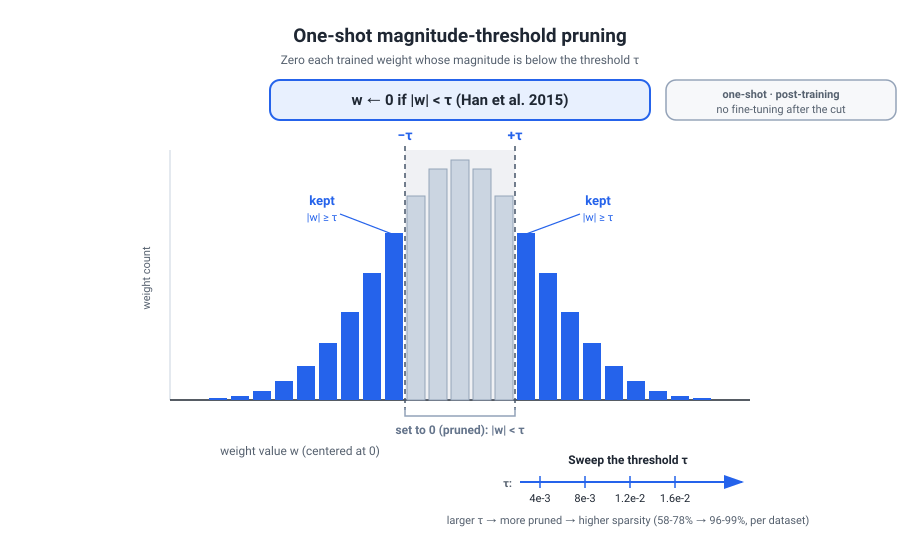
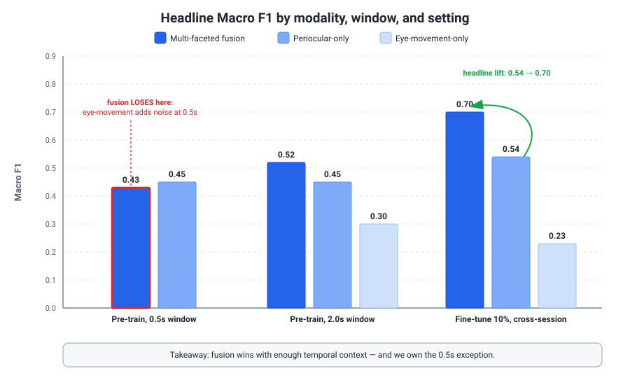

Your Own Papers — Ground-Truth Defense (Stage 1)
What this doc is
This is the ground-truth, PDF-verified defense of Tony's six own papers for Stage 1 with Yannick Versley. Every number below has been checked against the source PDF — no rounded-from-memory figures, no abstract-only paraphrases. If a number isn't here, don't say it cold. The goal: when Versley probes "why this design choice, why not X" or quotes a figure back at you, you answer from verified fact, not vibes.
How Versley reads your portfolio
Versley is an LLM-pretraining TLM who wrote a tokenizer/vocabulary-customization paper and a VLM-efficiency paper (Gemma3-4B finetuned beating a zero-shot 27B at ~3.8x speed). His whole recent output is "get frontier-quality behavior at a fraction of the cost." He distrusts hype and will catch a wrong number or a hand-wavy mechanism instantly. So:
He will zero in on the routing pair — TwinRouterBench + MERA. These are his problem: spend frontier-model money only where it buys resolution. Expect him to interrogate the cost accounting (matched resolve rate, the gamma penalty, why failure-aware accounting flips the ranking), the label-construction protocol (downgrade-and-cascade, the manual audit), and whether the "53%" and "51.8%" survive contact with a held-out set. Have the dynamic-track table and the CostSave-ablation story (variant E) ready — that's where a careful reader pushes.
He will also zero in on Diffusion Weights. It's the boldest mechanism claim in the set — "predict the next-epoch weights with a diffusion U-Net instead of running SGD." This is exactly the kind of design he'll stress-test: why diffusion, why a VAE latent, why not just LoRA / a learned optimizer / EMA merging? Lead with the ablations (state prediction matters most: residual variant drops up to 0.13 cosine; temporal loss 0.03–0.05) so the mechanism reads as earned, not decorative. Be honest about scale (GPT-2 up to 1.5B, single 4090).
He'll likely skim the three domain papers — Pruning nnU-Net, Reverse Imaging, Eye-Tracking VR. They're strong and real, but medical-imaging Dice and VR periocular fusion are outside his daily judgment. Use them as range and first-author signal, not as the technical centerpiece. The one bridge worth drawing: Pruning nnU-Net is the same efficiency thesis (>80% weights gone, quality held) in a different domain — fold it into the systems-race narrative rather than presenting it standalone.
The cross-paper story (say this out loud): "AI moved from a scaling race to a systems race." Once raw scale plateaus economically, the win is doing more with fixed compute. Your portfolio is four angles on that single thesis: route the right model per step (TwinRouterBench), adapt the serving policy safely over time (MERA), compress a trained model 80%+ (Pruning nnU-Net), and cheapen training itself via weight forecasting (Diffusion Weights). Reverse Imaging and Eye-Tracking show the same instinct — extract the invariant signal instead of collecting more data. That arc maps directly onto Versley's own efficiency-over-scale work, which is the rapport you want.
Say-it-cold numbers (one verified headline per paper)
| Paper | Role | The number you can say cold |
|---|---|---|
| TwinRouterBench | 3rd author | Trained router cuts API cost 53.1% vs unrouted Opus (25.66 vs 54.73) at matched 75/100 resolve rate on the dynamic SWE-bench track |
| MERA | co-author | 87.3% router accuracy at 51.8% of always-large serving cost with 4.4% fallback (best four-cycle schedule) |
| Diffusion Weights | author | ~3.2x wall-clock fine-tuning acceleration at comparable downstream accuracy |
| Pruning nnU-Net | first author | >80% of trained nnU-Net weights removed while proxy Dice stays >0.95 across 4 datasets |
| Reverse Imaging | co-author | Zero-shot MOLLI LV Dice 39.9 → 91.6 with no target-domain data |
| Eye-Tracking VR | first author | Periocular+eye-movement fusion lifts cross-session F1 0.54 → 0.70 |
Reading guide
Read the routing pair (TwinRouterBench + MERA) and Diffusion Weights first — that's where Versley will spend his questions. Skim the three domain papers for range and first-author credibility.
TwinRouterBench
Paper: TwinRouterBench: Fast Static and Live Dynamic Evaluation for Realistic Agentic LLM Routing. arXiv preprint (lead affiliation: Gradient), arXiv:2605.18859v2 [cs.LG] (v2 dated 22 May 2026; first version 8 May 2026). Code + data:
github.com/CommonstackAI/TwinRouterBench. Do NOT say "ACM CAIS / RLEval Workshop" — that venue is wrong and was copied over from another paper in the old pack. This is a benchmark paper (two tracks), not a cost-reduction method. Hold that line: the famous "53%" is a downstream sanity check, not the contribution.
The one-liner & 60-second pitch

The one-liner. TwinRouterBench is a step-level agentic LLM-routing benchmark with two tracks: a fast deterministic static track of 970 execution-verified router-visible prefixes built by a downgrade-and-cascade labeling protocol, and a live dynamic track that runs routers end-to-end on SWE-bench Verified with real API pricing; I'm the 3rd of 17 authors.
60-second pitch (say it roughly like this):
"Existing router benchmarks score one-shot prompts: one query, one model pick, one answer, usually graded by an online LLM judge. But the place routing actually pays off is long-horizon agents, coding, RAG, tool-use, where one user request fires many model calls and a cheap choice at step i can quietly break step i-plus-five. TwinRouterBench is the first benchmark that scores routing per call: given the real prefix before the next call, system prompt, prior messages, tool outputs, shell traces, partial code, what's the cheapest tier that still preserves end-to-end task success? It has two tracks. The static track is 970 step-level prefixes with execution-verified tier labels, scored by deterministic arithmetic in milliseconds, no online judge, so you can iterate fast and reproducibly. The dynamic track runs routers live on SWE-bench Verified with real OpenRouter pricing and bills you for unresolved instances, so the offline labels get validated under real agent execution. The two hardest engineering problems were building the labels cheaply and not fooling yourself, and that's the part I can defend in depth. I'm the third author, a regular co-author, not one of the two equal-contribution leads."
Verified numbers (ground truth)
Tony's role, stated precisely (memorize this — it's the credibility gate): I am Tongyun Yang, 3rd author of 17, listed as "Independent Researcher." The two equal-contribution leads are Pei Yang and Wanyi Chen (the stars are on them, not me). The corresponding author is Tianyu Shi (tianyu@gradient.network). I am a regular co-author, not a co-lead and not corresponding.
| Figure | Exact value | Where |
|---|---|---|
| Static corpus | 970 router-visible step rows from 520 trajectory instances, 5 workloads | Abstract; §3.3; Table A2 |
| Workloads | SWE-bench 40/336, BFCL 130/248, mtRAG 193/193, QMSum 145/145, PinchBench 12/48 (inst/rows) | Table A2 |
| Tier distribution | low 689, mid 62, mid_high 49, high 170 — and 168 of 170 high rows are SWE-bench | Table A3 |
| 4 ordered tiers → fixed pool | T = {low, mid, mid_high, high} mapped to an 11-model pool | Table A4 |
| Frontier-LLM-as-router fails | Opus 4.6 predicts "high" for only 7 of 147 verified-high SWE steps (4.8%), under-predicts 140/147, fails all 40/40 SWE trajectories | Intro; §6.1; Tables A9/A10/A18 |
| Tier = pool (cascade) | 3-model cascade recovered 28 of 33 downgradeable labels vs 15 of 33 single-model | §4 "Verify tiers as pools" |
| Manual audit | 64 steps (~10%); 63 tight, 1 SWE step lowered before release → 98.4% tight | Table 1; §4 |
| Headline "53%" | 53.1% = 1 − 25.66/54.73, trained router vs unrouted Opus 4.6 at matched resolve rate (75/100 trained vs 74/100 unrouted Opus) | §5.1; §6.2; Conclusion |
| Trained vs rule-based router | 6.7× cheaper: $25.66 vs $172.56 API cost | §6.2; Table 3 |
| Unresolved-instance penalty | γ = $0.60 per unresolved instance (set just above unrouted-Opus per-instance avg of $0.55) | §5.2 |
| High-tier price asymmetry | high tier 10–50× more expensive than the three lower tiers; mis-routing low→mid is within 3% of cost-free | §5.1; Tables A5/A16 |
| CostSave accounting ablation | Only failure-aware variant E ranks SR-KNN (56.18) above ClawRouter (53.82); variants A–D all rank Claw above | §A.15; Table A17 |
| Step-level case study | sympy__sympy-12096, 13 steps: verified step-level routing −39.6% cost vs all-high ($0.0576 vs $0.0953) | §A.9; Table A7 |
Static leaderboard — Table 2 (970 rows, %). Note RowExact is the honest column; RowPass alone is gamed by defaulting cheap.
| Router | RowPass | RowExact | TrajPass | CostSave | Combined |
|---|---|---|---|---|---|
| SR-KNN (in-sample 1-NN ceiling) | 91.86 | 78.76 | 84.74 | 56.18 | 77.89 |
| UncommonRoute (rule-based) | 88.35 | 61.13 | 62.37 | 15.99 | 56.96 |
| ClawRouter (rule-based) | 80.82 | 11.75 | 64.64 | 53.82 | 52.76 |
| Opus 4.6 (always-high envelope) | 100 | 17.53 | 100 | 0.00 | 54.38 |
Dynamic leaderboard — Table 3 (100-case held-out SWE-bench Verified). "Bill" = API cost + $0.60 × unresolved.
| Policy | Resolved | API cost | Leaderboard bill |
|---|---|---|---|
| UncommonRoute (trained) — best | 75/100 | $25.66 | $40.66 |
| SR-KNN router | 75/100 | $55.61 | $70.61 |
| Opus 4.6 (no routing) | 74/100 | $54.73 | $70.33 |
| UncommonRoute (rule-based) | 73/100 | $172.56 | $188.76 |
The mechanism, precisely

What's actually new: what the router sees and what gets scored. Prior benchmarks (RouterBench, LLMRouterBench, RouterArena) score at the query level, one prompt → one model → one answer, and lean on an online LLM judge at eval time. TwinRouterBench scores at the step level, conditional per call: each row exposes the real router-visible prefix before one specific call and asks for the cheapest tier that still preserves end-to-end resolution. Routing-by-difficulty is an old idea; verified step-level labels via full-trajectory replay are the new part.
The static track — the real technical meat is the labeling protocol (this is the slice I own):
- Seed only from success. Start only from trajectories that already resolve under a strong model (Claude Opus 4.6 or GPT-5.4, via mini-swe-agent for SWE; harness pass-predicates elsewhere). The label "cheapest tier that preserves success" is only defined when success is achievable, so this is a deliberate scope choice, not an accident.
- Greedy sequential-locking downgrade search (Algorithm A1). Opus 4.6 gives a per-step downgradeability hint; then for each step, with earlier steps locked at their verified tier and later steps at strong tier, candidate tiers are tried cheapest-first. A candidate is accepted only if the full trajectory still passes with the same number of steps. The acceptance test is end-to-end, not local. This collapses the naive |T|^N grid (4-to-the-N reruns) to O(|T|·N) (4-times-N), which is what makes the corpus buildable at all.
- Verify a tier as a pool, not a single model. A tier label is a claim about a capability class. A 3-model cascade accepts the tier if any pool model passes the mixed-model trace, because within-tier model choice is noisy and single-model probing under-credits a tier (28/33 vs 15/33). A real router does pick within a tier, so the pool definition matches what a router can exploit.
- Harden open-ended judges. For mtRAG/QMSum, the LLM judge is replaced by a structured solve/faithfulness/appropriateness/completeness rubric with fail-on-uncertainty.
- ~10% manual audit to catch what greedy might miss.
Scoring is deterministic arithmetic over tier labels, trajectory membership, and token costs — four metrics, RowPass / RowExact / TrajPass / CostSave — computed in milliseconds with no online judge. The key accounting choice is the failure-aware CostSave numerator: passing trajectories are credited their savings vs always-high; failing trajectories are charged their cost, not credited.
The dynamic track runs routers end-to-end on SWE-bench Verified (mini-swe-agent v2.2.8, live OpenRouter pricing). At each call the router picks a concrete model from a locked pool; the paper reports official resolve rate, realized API spend, and a leaderboard bill = API cost + $0.60 per unresolved instance, on a 100-case held-out split disjoint from the static SWE supervision.
How Versley will probe it
Q: You're 3rd of 17, after two equal-contribution leads. Be concrete: what was actually your work, and what are you not taking credit for?
"Let me be precise about the byline. The two equal-contribution leads are Pei Yang and Wanyi Chen, marked with stars; Tianyu Shi is corresponding. I'm the third author, listed as an independent researcher, so a regular co-author, not a co-lead. I won't claim the project framing or the headline experiments as mine. Where I can speak with real depth is the methodology that makes the static track defensible: the downgrade-and-cascade labeling protocol, the failure-aware cost accounting, and why the frontier-model-as-router baseline collapses. Those I'd defend line by line, and I'm happy to be pushed on any of them. One thing I'd flag honestly up front: the 53% that gets quoted is a training-utility result, not the paper's core contribution and not something I'd present as mine."
Q: Your label search is greedy and sequential, one step at a time with earlier steps locked. That can't catch two individually-safe downgrades that jointly break the trajectory. How much do you trust these 970 labels, and why greedy rather than the full grid?
"I'll concede the limitation up front: it's greedy sequential-locking, Algorithm A1, and it can miss cross-step interactions. We list that as a limitation; we don't claim otherwise. We went greedy because exhaustive verification over four tiers across N steps is order four-to-the-N reruns; greedy with locking collapses that to order four-times-N, which is what makes the corpus exist at all. Two things keep me comfortable. First, the acceptance test is end-to-end, not local: a tier is accepted only if the full trajectory still passes with the same number of steps, so we're checking downstream survival, not just the one call. Second, the ~10% manual audit is specifically there to catch interaction effects greedy would miss, and it found exactly one further-downgradeable SWE step out of sixty-four, which we lowered before release, so 98.4% came back tight. That's a quality check, not a confidence interval, and I won't oversell it. The honest next step is targeted joint re-verification on the highest-fan-out trajectories, where interaction risk concentrates."
Q: You verify a tier as a pool — accepted if any of three models passes, which recovered 28 of 33 labels versus 15 single-model. Isn't that just giving each tier three shots on goal? A deployed router picks one model.
"Fair worry, and I want to separate two things: what a tier label means and what a router is scored on. The label is a claim about the tier as a capability class, not about one checkpoint. Individual models flake on individual steps, so single-model probing systematically under-credits a tier, that's the 15-of-33 versus 28-of-33 gap on the SWE last-step audit. The pool says 'this tier contains a model that handles this step,' which is exactly what a real router exploits, because a router does pick within a tier. Now the validity check you're pointing at is correct, and the dynamic track is the answer: there the router picks one concrete model per call, no pool leniency, and we measure real resolve rate and real spend. If the pool labels were fantasy, the trained router wouldn't transfer to the live SWE track. It does."
Q: Your CostSave ablation shows four of five variants rank ClawRouter above SR-KNN, and only your chosen variant E flips it. From outside, that looks like you picked the metric that makes your preferred router win. Defend it on first principles, not on the ranking.
"I agree the optics demand a first-principles answer, because Table A17 is explicit: A through D rank Claw above SR-KNN, only the failure-aware variant E flips it, 56.18 to 53.82. The principle: a router that saves a little money but breaks the task hasn't saved anything, it's destroyed value, because the user still needs the task done. The legacy variants credit a trajectory for being cheap even when it fails, which rewards exactly the wrong behavior. Variant E charges failed trajectories their cost. The reason this specifically corrects Claw is structural: Claw looks thrifty under loose accounting by doing one-tier upgrades that don't actually preserve downstream success, and the loose formulas can't see the failure. Two facts back the choice, not the ranking. One, the pricing-asymmetry ablation shows mis-routing low-to-mid is within three percent of cost-free while the high tier is 10-to-50× more expensive, so the only accounting that matters is one that punishes failure-inducing under-routing on the expensive tier. Two, the whole point of the benchmark is downstream success, so accounting that ignores failure contradicts the thesis. And I'd say honestly: the fact that the ranking is metric-sensitive is itself a finding we chose to publish rather than bury."
Q: People will quote "53% cost reduction." Tell me exactly what that number is, what it is not, and whether it's even the paper's contribution.
"It's real but narrow, and I'd never lead with it as the contribution. It's 53.1%, one minus 25.66 over 54.73: the trained UncommonRoute logistic router spends $25.66 in realized API cost versus $54.73 for unrouted Opus, at matched resolve rate (75/100 trained vs 74/100 unrouted Opus), on the dynamic track. Critically: it's a dynamic-track result, not a static-benchmark result; it's a 100-case held-out SWE-bench Verified split, not the full 500; and it's offered as evidence the static labels work as training supervision, nothing more. What it is not: the paper's main result. The paper is a benchmark with two tracks. If someone cites 'TwinRouterBench is a method that cuts cost 53%,' they've misread it. The number I'd actually highlight is that the same trained router is 6.7× cheaper than the rule-based variant, $25.66 versus $172.56, because that's learned routing beating hand-written rules."
Q: RouterBench, RouterArena and others already exist. Strip the framing: what is genuinely new, and is step-level routing a real problem or manufactured?
"The structural difference is what the router sees and what gets scored. Prior router benchmarks score at the query level, one prompt, one model, one answer, usually an online judge, and never expose the router at an intermediate step or test whether a cheap call lets a later step succeed. That's the gap. In a real agent, one request fires many calls and a cheap early call can silently poison a later one. We score step-level, conditional per call: given the actual prefix, pick the cheapest tier that preserves end-to-end resolution. Two things show it's not manufactured. First, our own diagnostic: frontier-model-as-router predicts high for only 7 of 147 verified-high SWE steps and fails all 40 SWE trajectories, so step-level difficulty is real and not captured by query-level intuition. Second, scoring is deterministic arithmetic over tier labels and token costs, milliseconds, no online judge, which removes judge variance at eval time. I'd be honest that routing-by-difficulty isn't new; verifying labels by full-trajectory replay is."
Honest limitations & how to frame them
Be the one who volunteers these. Versley trusts the person who names the weakness before he has to.
- The old pack's framing was fabricated — do not recite it. The old defense doc described "static = dev distribution vs live = streamed real traffic," regret/online-learning metrics, a 15pp distribution-shift sensitivity curve, ~12,000 queries over 30 days, ECE 0.07/0.19 calibration, and a GPT-4o baseline. None of that is in the paper. If any of it is on the tip of your tongue, kill it. The truth is simpler: static = deterministic offline scoring of 970 verified prefixes; dynamic = live harness on SWE-bench Verified with real pricing; baseline is Opus 4.6, not GPT-4o; no regret, no ECE, no streaming corpus.
- Survivorship by design. Labels seed only from strong-model successes, so the benchmark measures routing headroom on solvable tasks, not absolute task difficulty. Say this as a scope limit, not a cover-up: "If the strong model can't solve it, there's no downgrade question to ask."
- Staleness is built in and disclosed. Labels are valid only under the fixed 11-model pool, the cascade protocol, and the §5.1 price snapshot. If a future model becomes both cheap and highly capable, the labels need regenerating, and changing the pool/price/protocol constitutes a new benchmark version, not a patch. The dynamic track only makes the money-claim re-measurable; it doesn't "solve" staleness.
- Greedy may miss cross-step interactions (covered above) — partially, not fully, guarded by the manual audit, which is "not an external annotation study or a confidence interval."
- Class imbalance is real, and RowPass is not the headline. 689 of 970 rows are "low," and 168 of 170 "high" rows are SWE-bench. A router that defaults cheap scores deceptively well on RowPass. Pivot to RowExact (Opus always-high gets only 17.53, Claw 11.75, SR-KNN 78.76) and to per-workload CostSave, where the SWE slice does the real discrimination (SR-KNN −1.64, rule-based UncommonRoute −86 on SWE, while SR-KNN and rule-based ClawRouter both average above 85% cost savings across the other four workloads).
- SR-KNN is an in-sample 1-NN ceiling, not a deployable baseline. Treat it as an optimistic yardstick; the interesting result is the trained logistic router getting within range of it on the live track while rule-based routers don't.
- Dynamic coverage is thin: SWE-bench Verified only, and only a 100-case subset, not the full 500. Static and dynamic scores are never averaged.
Thesis bridge
This is the cleanest instantiation of "AI is moving from a scaling race to a systems race" you have. The frontier models are extraordinarily capable; the open problem is spending them efficiently across a long-horizon agent. TwinRouterBench says, with numbers, that the frontier model is a terrible router of itself (7/147, 0/40), and that a tiny logistic model trained on cheap execution-verified labels routes well enough to cut realized cost by half at matched resolve. That's the systems-race thesis in one experiment: the differentiator isn't a bigger model, it's the routing policy and the honest accounting around it.
To Versley / eBay specifically: eBay's Mercury-style stack runs many models in parallel (LiLiuM, e-Llama, fine-tuned Llama/Mistral, plus external GCP/Azure/OpenAI) across agentic shopping and listing workflows. The missing piece is which model handles each agent step — exactly the step-level conditional routing this benchmark is built to evaluate. Two ideas map directly onto his world. First, the failure-aware accounting is the same instinct as his production-correctness work (his vocabulary-extension monotone guarantee): a cost metric that secretly rewards task-breaking under-routing is as dangerous as a tokenizer change that secretly lengthens sequences. Second, e-Llama's whole premise — a domain-adapted small model matching a frontier model on e-commerce tasks — is precisely the capability gap a step-level router is supposed to exploit at call time. Honest caveat to keep in the room: this is a benchmark, not a deployed eBay system, and its labels are tied to one frozen pool/price snapshot, so I'd present it as the evaluation discipline I'd bring, not a turnkey number.
MERA
Full title: "MERA: Model Evolution and Routing with Skill Adaptation for Agentic Systems at Scale." Venue: RL-Eval 2026 workshop (OpenReview id 6oyBiDMCHs). Code: github.com/zeyuyuyu/router-skills-evolve.
Read this before anything else: the headline number is router accuracy, not task accuracy. The old pack said "87.3% accuracy at half cost" as if the agent answered 87.3% of tasks correctly. It does not. 87.3% is how often the learned router's cheap-vs-strong decision matches held-out labels on an 832-example set. Say it that way every single time. If you slip and present it as task accuracy, Versley will catch it in one sentence and the rest of the conversation is uphill.
The one-liner
MERA is a trace-driven framework that adapts an agent's per-invocation serving policy — an input-only router over strong / cheap / specialized models plus a SkillBook template layer, all protected by a verifier-with-fallback — and admits updates only after offline joint replay shows combined quality is preserved; in the best four-cycle schedule it reaches 87.3% router accuracy at ~52% of always-large serving cost with a 4.4% fallback rate.
60-second pitch
"The problem MERA tackles is that routing once per user task is too coarse — inside one multi-step agent trace, easy and hard steps are interleaved — but adapting every individual invocation is dangerous, because a cheap model can fail silently and a learned adapter can regress on rare cases. So MERA does two things. At runtime, before each invocation a small router looks only at the serialized prompt and local context and picks among a strong model, a cheap model, or an optional 1.5B specialist; a SkillBook can fire a stable template for recurring local structure; and then a verifier checks the output — schema, tool-call legality, executable tests — and falls back to a stronger model if it fails. Offline, the logged traces feed three separate update tracks — the SkillBook statistics, a BERT-tiny router, and a LoRA adapter on a Qwen2.5-Coder-1.5B student trained with GRPO — and a new combined state is only promoted if a joint replay shows end-to-end quality held. The key design idea is that cost and safety are decoupled: the router optimizes cost, the verifier protects quality. On code-generation benchmarks the best schedule gets router accuracy to 87.3% while cutting serving cost to about 52% of always using the large model, with a 4.4% verifier fallback rate. I'm the third author."
Verified numbers
These are ground truth from the PDF. Do not round away precision; do not invent comparisons that aren't here.
| Metric | Exact value | What it actually is |
|---|---|---|
| Best four-cycle router accuracy (Skill→LLM→Router) | 87.3% | Match to held-out cheap/strong labels on 832 examples. NOT task accuracy. |
| Best four-cycle serving cost | 51.8% of always-large (= cost cut by 48.2%) | Cost normalized to always-using-the-large-model = 100% |
| Best four-cycle fallback rate | 4.4% | Fraction of invocations the verifier rejects and reruns on a stronger model |
| Eight-cycle peak router accuracy (cycle 3) | 87.8% | One continuous 8-cycle run, not 8 independent runs |
| Eight-cycle cycle-3 cost / fallback | 52.8% cost, 3.4% fallback | The peak operating point of the long run |
| Eight-cycle stabilized accuracy band | 82–87% | After warm-up; cycle-5 dips to 76.7% (router-seed outlier; that cycle's fallback also spikes to 14.4%) |
| Eight-cycle cycles 4–8 mean | 84.3% acc / 5.3% fb / 55.7% cost | Long-horizon average (as reported in Table 4) |
| Only task-quality number in the paper: 1.5B GRPO adapter LLM pass rate (MBPP eval200) | 47.5% vs ~47.0% baseline (band 46.5–47.5%) | Essentially flat, no cumulative gain |
| Worst ordering (Skill‖Router→LLM) | 76.0% acc, 63.2% cost | Defines the bottom of the ordering ablation |
| Evolver Dataset executable code tasks | 590 (HumanEval, MBPP, hard traces) | The whole benchmark is code-gen |
| Weakly-labelled router examples (from UncommonRoute) | 3,328 | Weak supervision, not an oracle |
| Code-task splits (Train/Dev/Test) | 472 / 59 / 59 | Appendix B, Table 3 |
| Router-task splits (Train/Dev/Test) | 2662 / 332 / 334 | Appendix B, Table 3 |
| SkillBook coverage by end of 8-cycle run | 34 signatures, 120 observations | Grows slowly |
| Four-cycle wall-time (full parallel) | ~99 min → 95 min | Parallelizing GPU router+LLM tracks; SkillBook is CPU-bound |
Tony's author role: third of seven authors, byline reads "Tongyun Yang," affiliation "Independent Researcher." Other authors: Yuhang Yao (CMU), Zeyu Wang (UCLA), Wanyi Chen (Soochow), Yuhang Han (SJTU), Jie Xiao and Tianyu Shi (Gradient; Tianyu Shi is the corresponding author). There is no McGill, Tsinghua, or Tencent on this paper — if the old "cross-cultural collaboration with McGill/Tsinghua in China" story is anywhere in your head, drop it. Two of the academic affiliations (CMU, UCLA) are US.
The mechanism, precisely


Think of MERA as two loops plus an admission gate.
Loop 1 — Runtime (input-only router + verifier-protected). At each agent invocation:
1. The router R observes only the serialized prompt plus local context — explicitly not hidden agent state or tool-execution traces — and chooses among strong model / cheap model / optional specialized student (the student is a Qwen2.5-Coder-1.5B LoRA adapter).
2. A skill selector may instead dispatch a stable SkillBook template when the local structure matches a recurring signature — formatting, extraction, single-tool argument construction.
3. The chosen path executes.
4. The verifier V checks schema validity, tool-call legality, and executable tests/success. If V passes, you're done cheaply. If V fails, the invocation falls back to a stronger model and the event is logged with retry count and fallback metadata.
So cost savings come from steps 1–2 (easy, checkable steps go to the cheap model or a template), and the reliability guarantee comes from step 4 (a bad down-route is caught and rerun). Those two mechanisms are decoupled — that is the cleanest thing to say about MERA.
Loop 2 — Offline iterative update. Complete traces are canonicalized into step slices (prompt, local context, tool schemas, output, verifier result, retry count, fallback metadata, skill assignment). These feed three separate tracks over the shared traces: - SkillBook — CPU-bound success/failure statistics for recurring prompt signatures/motifs. - Learned router — a BERT-tiny checkpoint trained on prompt text with cheap/strong weak-supervision labels. - LLM update — a GPU-heavy LoRA adapter on the Qwen2.5-Coder-1.5B student, trained with local GRPO on a hard-example pool (cases where cheap execution failed, or where router and SkillBook disagree).
The admission gate — joint replay. A new router/skill/adapter state is promoted only if a joint replay evaluation shows combined quality is preserved. Components are judged by their end-to-end effect together, not by isolated metrics. This is the "conservative monotone deployment" discipline, and it is the part Tony should call the real contribution.
What's genuinely new (so you don't overclaim): the router itself is a plain BERT-tiny classifier — not a novel routing algorithm. The deltas versus RouteLLM/cascade-style prior work are (a) invocation-level granularity inside a multi-step trace rather than one route per task/prompt, and (b) joint, replay-gated admission of three heterogeneous tracks together. Say exactly that; don't claim a clever new router.
The within-cycle ordering of the three tracks is a scheduling choice, and the paper's two ablations are entirely about it (six orderings in a four-cycle study; one eight-cycle long-horizon run).
How Versley will probe it
Q: "87.3% accuracy of what? Is that the agent getting tasks right?" This is the highest-risk question in the whole paper, so volunteer the distinction before he forces it. "I want to be careful, because it's easy to misread. 87.3% is router accuracy — how often the learned router's strong-vs-cheap decision matches held-out labels on an 832-example set. It is not the agent's end-to-end success rate. The actual task-quality signal we report is the small student's pass rate on MBPP eval200, about 47.5%, essentially flat against a 47.0% baseline. And honestly, the paper reports no overall agentic task success rate at all. So the fair summary is: the router learns to reproduce the cheap-or-strong decision well, which lets us hold quality roughly constant while cutting serving cost to about 52% of always-large, with a 4.4% fallback rate. I would never present 87.3% as the agent answering tasks correctly."
Q: "Your router is graded against weak labels from the same UncommonRoute pipeline that made your training data. Isn't that circular? What's the ground truth?" "That's the right pressure point, and I'll concede it's the weakest part of the evaluation story. The 3,328 router examples are weakly labelled and the 832-example held-out set is from the same distribution, so router accuracy measures agreement with weak cheap-vs-strong labels, not a verified oracle of 'this step was genuinely safe to down-route.' What keeps it honest in deployment is decoupled from that: it's the verifier. At runtime the router can be wrong, the verifier catches schema, tool-call, and executable-test failures and falls back, and that fallback rate is 4.4%. So I read router accuracy as an internal optimization metric, and the fallback rate plus the cost reduction as the deployment-relevant numbers. A stronger eval — which we list as future work — would grade the router against verifier-confirmed outcomes on a larger, ideally online set."
Q: "Why deliberately blind the router to hidden agent state? Step difficulty depends on what happened earlier." "It's a deliberate serving-simplicity and reproducibility tradeoff, and yes, it costs us signal. Hidden agent state and tool traces are high-dimensional, unstable across framework versions, and expensive to serialize on the latency-critical path before every invocation. If the router depended on internal state it'd be tightly coupled to one agent implementation and harder to keep a tiny model reliable. Restricting it to the serialized prompt plus local context keeps the decision cheap, portable, and reproducible during offline replay — which matters because our whole admission protocol is replay-based. The cost, exactly as you say, is that two steps with identical local prompts but different upstream history get routed the same way. We absorb that two ways: the verifier-fallback corrects a bad down-route, and the SkillBook only fires under narrow signatures where local structure is actually predictive. So it's input-only by design, with the verifier as the safety net for what we chose not to look at. I wouldn't claim input-only is strictly better."
Q: "Your ordering table spans 76.0% to 87.3%, but your eight-cycle run has a cycle-5 dip to 76.7% you call a 'seed outlier' — with no multi-seed runs. How do you know Skill→LLM→Router is really best and not seed noise?" "Completely fair, and the honest answer is we can't fully separate ordering effect from seed variance with the data we have. You've put your finger on the internal inconsistency: if a single router seed in cycle 5 can drop us to 76.7%, then the 76.0% worst ordering in the four-cycle table could partly be seed noise too. We didn't run multi-seed, and we explicitly list multi-seed ordering studies as future work — that's an admission the ranking is suggestive, not statistically established. What I'd still stand behind is the qualitative pattern, because it matches the mechanism: skill evidence first, router last, so the router trains on the most current policy including this cycle's new skill and adapter behavior. And the cost and fallback numbers are tighter across orderings than the headline accuracy. But I wouldn't sell Skill→LLM→Router as proven optimal — it's the strongest observed operating point in a single-seed study."
Q: "The 1.5B GRPO adapter moves pass rate 47.0 → 47.5 and doesn't accumulate. That's noise. Why is the LLM track in the paper, and why GRPO over SFT/distillation?" "I won't dress this up — the LLM track is the weakest component empirically. Roughly a half-point bump, stuck in a 46.5–47.5% band, no cumulative gain. We keep it deliberately for two reasons. First, the contribution is the joint admission harness, and part of its value is diagnostic: MERA honestly reports that GRPO isn't yet earning its GPU cost. Second, routing and SkillBook gains are real, and the adapter is the slot where future quality improvement would land. On GRPO over SFT or distillation: we wanted an objective that learns from execution outcomes on the hard-example pool — cases where cheap execution failed or router and SkillBook disagree — rather than imitating the strong model's tokens, because those are exactly the cases where the strong model's trace may not be the right supervision. That said, the recipe is undertuned; we flag KL and reference-model stabilization as future work, and a distillation baseline is a comparison we didn't run."
Q: "The title says 'at Scale,' but it's 590 code tasks with an executable verifier. Where's the scale, and what survives in a domain where you can't cheaply verify correctness?" "Two honest concessions. First, the title overstates what the experiments show — 590 executable tasks and 3,328 router examples, code-gen only, is a feasibility and ablation study, not a large-scale deployment result. 'At scale' is aspirational about the framework design, and I'd describe it that way rather than defend it. Second, and more important: the whole method leans on the verifier. We chose code generation precisely because it gives a cheap, near-objective verifier — schema checks, tool-call legality, executable tests. That's the linchpin, and our own limitations section says routing-label quality and student admission depend entirely on verifier coverage; if the verifier misses a semantic failure mode, MERA overestimates how safe it is to down-route or promote a skill. In a domain without executable checks — say e-commerce attribute extraction — you'd need a substitute verifier, a learned judge or constraint checker, and the guarantees are only as good as that proxy. So MERA transfers exactly as far as you can build a trustworthy, cheap verifier for the new domain."
Honest limitations & how to frame them
The over-claim the pack had — fix it first. The old pack presented "87.3% accuracy at ~50% cost" as end-to-end task accuracy, and invented a comparison story around it (a 89.6% strong-model baseline, a 2.3pp quality sacrifice, a per-skill accuracy breakdown, a 7B specialist, an SFT/behavioral-cloning method, a +12pp "skill-adaptation" ablation). None of that is in the paper. Ground truth: 87.3% is router accuracy; the cost half (~52% of always-large) is roughly right; the only task-quality number is the flat ~47.5% MBPP pass rate; the student is a single 1.5B model trained with LoRA + GRPO, not a per-skill 7B specialist; and the real ablations are the six-ordering study and the eight-cycle run. If asked about anything from the old framing, the move is: "Let me correct my own summary — that conflates two metrics."
The genuine, paper-stated limitations (own these confidently): - Verifier coverage is load-bearing. Routing labels and student admission depend entirely on it; a missed semantic failure mode means MERA overestimates safety. (Appendix C.) - Simple-first bias means gains arrive gradually. Narrow, checkable steps get down-routed early; a substantial fraction of hard long-horizon reasoning stays on the strongest model for a long time. - Replay, not fully online. Replay enables controlled counterfactual eval under a shared verifier, but can't perfectly capture the distribution shift induced by changing the runtime policy itself. - Skill promotion assumes canonicalizable local subgraphs. Highly heterogeneous tasks don't pay off; benefits depend on workload repetition — non-stationary traces or few reusable step types limit specialization. - GRPO adapter is modest and non-cumulative. The current recipe yields no cumulative LLM gain. - No end-to-end agentic task success rate is reported anywhere; no human/A-B eval; no multi-seed/significance results (all future work). Don't imply otherwise.
Thesis bridge
MERA is a clean instance of the scaling race → systems race thesis: it doesn't make any model bigger; it extracts value from how a fixed pool of models is served. The leverage is invocation-level routing plus a replay-gated admission discipline — pure systems thinking around static weights.
The honest connection to eBay / Versley's world: - Mercury already runs multiple models per query. MERA's contribution — routing inside a multi-step trace rather than once per task, with a verifier-protected fallback so an aggressive router can't silently degrade output — is the discipline you'd want before pushing routing changes into a live multi-model agentic system. - The verifier is the gating concern, and that's exactly the e-commerce challenge. Code-gen was chosen because verification is cheap there. eBay's domains (attribute extraction, listing generation, MT) rarely have executable ground truth, so the open question MERA surfaces is: can you build a cheap, trustworthy verifier or learned judge for e-commerce outputs? That's a genuinely good thing to put to Versley, whose 15 years in evaluation methodology and MT eval is precisely the background for it — and it's the same skepticism behind his weak-label/circularity probe. - Specialist evolution echoes e-Llama. The idea of growing a cheaper domain student over time rubs against eBay's own continued-pretraining work — but be honest that MERA's adapter shows no cumulative gain yet, so the connection is aspirational on the model-evolution axis and concrete only on the routing + admission axis.
Frame it as: "MERA is the routing-and-admission half of the systems-race story done carefully; the model-evolution half is where the paper is honest that the work isn't finished."
Diffusion Weights (U-Net as Next-Epoch Predictor)
Paper: "Revisiting U-Net as Next-Epoch Predictor: A Diffusion-Based Framework for Training Epoch Acceleration." Anonymous ACL submission under review (OpenReview eJmO6GP8DF), not yet accepted. Tony (Tongyun Yang) is an author. The PDF is anonymized for review, so handle authorship lightly: say "I'm an author on a paper currently under review at ACL," not "my accepted ACL 2026 paper."
READ THIS FIRST — the pack was wrong about this paper. Earlier prep docs coached you to walk in and confidently say "it's not really diffusion — no noise process, no reverse chain, deterministic MSE regression, closer to video prediction." Do not say that. It is flatly contradicted by your own PDF and Versley is the author's colleague — he will refute it on the spot. The paper uses genuine diffusion machinery. The correct, defensible line is "diffusion-inspired, with real diffusion machinery but a non-standard target." Everything below reflects the actual PDF.
The one-liner & 60-second pitch
One-liner: "I reframe LLM fine-tuning as a generative forecasting problem — a diffusion-style U-Net directly predicts effective future weight states (the 'next epoch') in a VAE latent space instead of computing SGD residuals, with contrastive task-conditioning and multi-horizon merging, giving about 3.2x wall-clock acceleration at comparable downstream accuracy."
60-second pitch (spoken): "Standard fine-tuning is information-inefficient — SGD computes a residual, takes one step, and throws the trajectory away. We collect thousands of checkpoints and only keep the last one, like keeping one frame of a movie and trying to reconstruct the plot. So we flip it: instead of computing the next update, we generate a future weight state directly. There are three pieces. First, a chunk-wise beta-VAE compresses the weights into a compact latent space so this is tractable on a single GPU. Second, a conditioning stack — a permutation-invariant encoder over the dataset plus a language embedding of the task instruction — tells the model which task we're forecasting for. Third, a conditional attention U-Net runs a real diffusion process in that latent space and predicts the clean future latent, which we decode back to weights. On top of that, a Multi-Horizon Merging step predicts short-, mid-, and long-horizon checkpoints and fuses them in weight space. Net result: roughly 3.2x wall-clock acceleration versus standard fine-tuning, at comparable downstream quality, demonstrated on GPT-2 up to 1.5 billion parameters."
Verified numbers (ground truth)
These are exact from the PDF — do not round. The headline 3.2x and the Table 1 per-task numbers genuinely disagree; that's a real internal inconsistency you should pre-empt, not hide.
| Figure | Exact value | Source |
|---|---|---|
| Headline acceleration (conservative) | ~3.2x | Abstract (p1, l28-29); Intro (p2, l124) |
| Implementation-details range | ~3-4x | Sec 4.1 (p6, l408-409) |
| Table 1 per-task speedup range | 3.8x - 4.3x | Sec 4.2 RQ3; Table 1 (p7) |
| GLUE | 10h -> 2.5h (4.0x) | Table 1 |
| LAMBADA | 6h -> 1.6h (3.8x) | Table 1 |
| MMLU | 18h -> 4.2h (4.3x) | Table 1 |
| OpenBookQA | 8h -> 2.1h (3.8x) | Table 1 |
| WikiText | 24h -> 5.8h (4.1x) | Table 1 |
| WMT16 EN-DE, TER (not BLEU) | 117.17 vs 133.88 (-12.5%) | RQ2 (p7, l435-439) |
| OpenBookQA accuracy | +2.9% relative | RQ2 (p7, l439-440) |
| PIGA weight variance (stability) | 0.0016 vs 0.0116 (-86%) | Sec 4.2 (p7, l442-443) |
| Winogrande @ 30 epochs | 0.5020 vs 0.4807 (+4.4%) | Sec 4.2 (p7, l444-447) |
| Ablation cosine sim, Full (S/M/L) | 0.85 / 0.82 / 0.78 | Table 2 (p8) |
| Ablation, w/o Temporal Loss | 0.82 / 0.78 / 0.73 | Table 2 |
| Ablation, w/o State Prediction (residual U-Net) | 0.78 / 0.72 / 0.65 | Table 2 |
| Multi-horizon merge @ epoch 250 vs pure prediction @ epoch 500 | >0.42 vs <0.38 | RQ4 (p8, l471-472); Fig 4 |
| Merge gain across 3 datasets | delta Acc 0.037 - 0.052 | RQ4 (p7, l461-464) |
| Merge-gain / later-checkpoint-quality correlation | r ~ 0.6, p < 0.01 | RQ4 (p7, l464-466) |
| PCA: major weight patterns variance | 17-30% | RQ1 (p6, l419-420) |
| Strong cross-layer alignment at epochs | 14,000 and 17,000 | RQ1 (p6, l415-416) |
| Training setup | 20,000 epochs, 20 equidistant checkpoints | Sec 4.1 (p6) |
| Model scales | GPT-2 tiny / large / XL (up to 1.5B) | Sec 4.1; Limitations |
| Hardware | single RTX 4090 | Ethics (p9) |
| Baselines | standard SGD fine-tuning; Model Soup & Greedy Soup (Wortsman et al. 2022) | Sec 4.1 |
Memorize cold: the five Table 1 rows (10->2.5, 6->1.6, 18->4.2, 8->2.1, 24->5.8), the WMT16 TER pair (117.17 / 133.88), and the ablation triplets (0.85/0.82/0.78 full vs 0.78/0.72/0.65 residual). Those three clusters carry most of the probing.
The mechanism, precisely

Three stages (Figure 2). State it in this order and you'll survive any drill-down.
Stage 1 — beta-VAE compression (latent space, not raw weights). Each layer's weight matrix W^(l) is row-major vectorized, padded to a multiple of a fixed chunk size, split into contiguous chunks, and compressed by a shared chunk-wise beta-VAE into compact latents z_tau = s * E(vec(theta_tau)). Everything downstream happens in this latent space. The reason is tractability — you cannot run a diffusion U-Net over 1.5B raw weights on one 4090. The beta term regularizes the latent so it's a smoother, better-behaved diffusion target than an arbitrary autoencoder code. Cost to name honestly: this introduces a reconstruction floor — Theorem 3.1 bounds the global reconstruction error by sqrt(k) * max_i ||w_i - w_hat_i|| over k chunks, so error can grow with chunk count.
Stage 2 — dataset/task conditioning. A permutation-invariant set encoder T_omega encodes class-conditional data subsets into a dataset embedding z_D (invariant to sample order and count); a language embedding z_c = L(c) from an instruction-tuned LLM encodes the task description. They're fused, y = Fuse(z_D, z_c), and injected into the forecaster via cross-attention / ControlNet-style modulation. A Contrastive Task-Conditioning loss (CLIP-style InfoNCE, eq 12) aligns dataset embeddings with weight embeddings so the right task pulls up the right region of weight space.
Stage 3 — conditional U-Net diffusion. A standard Gaussian forward process noises the target x_0 (eq 6). An attention U-Net F_psi — with a ControlNet-style zero-conv adapter for the conditions, plus LayerEmb / TimeEmb / TextEmb — is the reverse model and directly predicts the clean future state x_0 from a noisy x_t (x_0-prediction, eqs 7-8). The training loss is a state loss L_state = ||x_hat_0 - x_0||^2 plus a chrono-aware temporal loss L_chrono. Inference runs the reverse chain x_T ~ N(0, I) with DDPM/DDIM sampling, then decodes theta_hat = D(x_0^final) (Algorithm 1).
The one nuance that makes it "diffusion-inspired" rather than textbook DDPM — say this proactively, it's your credibility anchor: the target x_0 is a future weight state (the next-epoch checkpoint), not the clean version of the noisy sample you were handed. A normal denoiser recovers the same sample it corrupted; here the "denoiser" is really a future-state forecaster. Combined with (a) operating in a VAE latent space and (b) ControlNet conditioning, that's why I call it a denoiser-style generator over weights, not a canonical DDPM.
Multi-Horizon Merging. Train one forecaster to predict x_0 at short/mid/long horizons H = {delta_s, delta_m, delta_l}. Compute task vectors Delta_delta = theta_hat_{tau+delta} - theta_tau and merge in weight space: theta_merge = theta_tau + sum(alpha_delta * Delta_delta) with nonnegative coefficients summing to one (task-arithmetic / Model-Soup style). This exploits phase complementarity — early checkpoints encode broad adaptation, late ones encode task-specific refinement.
Theory backbone: Theorem 3.1 (sqrt(k) reconstruction bound, above) and Theorem 3.2, a cosine-similarity lower bound S >= 1 - eps^2 / (2 ||theta_train||^2) — the argument being that directional correctness survives even with modest Euclidean error, which is what matters for a usable checkpoint. (Note: the theory is NOT Aghajanyan intrinsic-dimensionality — an old prep doc claimed that; it's wrong.)
How Versley will probe it

Q: Be honest — is this actually diffusion, or just a fancy name on a regression model? This is the single most important credibility test of the conversation, so answer in two precise halves. What's genuinely diffusion: a standard Gaussian forward noising process, a reverse sampling chain, DDPM/DDIM at inference, and an attention U-Net as the reverse model — that's the real training objective and architecture, not cosmetic. What makes it diffusion-inspired rather than canonical: it operates in a beta-VAE latent space, not raw weights; it uses x_0-prediction where the target is a future weight state, so the denoiser is really a future-state forecaster; and conditioning is ControlNet-style. And one more honesty point I'll volunteer: the introduction frames it as "treating SGD as a forward diffusion process," but the implemented forward process is plain Gaussian noising, not the literal SGD trajectory — that line is motivational analogy, not math, and I'd phrase it more carefully in revision. (Trap: don't overclaim "real DDPM," don't overcorrect into "just regression." Genuine machinery, non-standard target.)
Q: You fine-tuned GPT-2 for 20,000 epochs to get your training data — you already paid full training cost. Where does the 3.2x actually come from? This is the most important question about the method and I won't dodge it: the acceleration is amortized, not free. Learning the forecaster needs real trajectories, so I fine-tuned GPT-2 variants for 20,000 epochs and sampled 20 equidistant checkpoints — that upfront cost is real, and the paper lists it as a limitation: the method does not eliminate the need to collect ground-truth trajectories. The win is on the margin: once the forecaster is trained on a family of trajectories and conditioned on a task embedding, for a new related task it predicts an effective future weight state without running that task to convergence. The Table 1 numbers are that per-new-task cost. So the honest boundary is: this pays off when you fine-tune many related tasks and amortize the trajectory collection — it is not a claim that the very first run is 3.2x cheaper. If pushed on "how many tasks to break even" — the paper doesn't quantify that, and I won't invent a number. (Trap: never claim it's unconditional; the killer follow-up is break-even, which isn't in the paper.)
Q: Your abstract says ~3.2x, implementation says 3-4x, Table 1 shows 3.8-4.3x. Which is it, and how was 3.2x computed? You've found a genuine inconsistency and I'd rather name it than paper over it. 3.2x is the conservative headline in the abstract and intro; the measured per-task numbers in Table 1 are higher — GLUE 10h to 2.5h is 4.0x, LAMBADA 6 to 1.6 is 3.8x, MMLU 18 to 4.2 is 4.3x, OpenBookQA 8 to 2.1 is 3.8x, WikiText 24 to 5.8 is 4.1x — so the table range is 3.8 to 4.3x, and implementation details say roughly 3-4x. The thing I can't fully reconstruct is the exact derivation of the 3.2x aggregate; there's no per-number source for it. My read is 3.2x was meant as a deliberately conservative claim, and the right fix is to either show that calculation or align the headline with the measured range. (Trap: don't reconcile with invented math; owning the gap is stronger.)
Q: Every optimizer predicts a residual. Why predict the absolute future state instead of the residual, which seems lower-variance?
Two reasons, one conceptual and one measured. Conceptually, residual/gradient prediction compounds error: each predicted update feeds the next, so error accumulates over a long horizon — predicting the destination x_0 in one shot sidesteps that. Empirically, I ablated exactly this on GPT-2 XL on Wikipedia: replacing state-prediction with a standard residual U-Net drops cosine similarity from 0.85 / 0.82 / 0.78 down to 0.78 / 0.72 / 0.65 across short/mid/long horizons, and the biggest drop, up to 0.13, is on the long horizon — precisely where error compounding should bite hardest. So the residual variant fails in the predicted way; that ablation is the strongest internal evidence for the whole design choice. The cost, fairly, is that predicting absolute states is what makes this non-standard and puts more pressure on the VAE to give a stable target. (Trap: cite the exact triplets; don't claim residual prediction never works — it's just worse here, worst long-horizon.)
Q: Why diffuse in a beta-VAE latent space — why not operate on the weights directly, and why beta-VAE not a plain autoencoder? First-order reason is tractability: GPT-2 XL is 1.5B parameters, a diffusion U-Net over raw weight vectors at that size isn't feasible on the single RTX 4090 I used. So the beta-VAE compresses — vectorize each layer, pad to a multiple of the chunk size, chunk, encode to compact latents — and the U-Net works there. The beta term regularizes the latent so it's smoother and better-behaved as a diffusion target than an arbitrary autoencoder code. The honest cost is a reconstruction floor: Theorem 3.1 bounds global error by root-k times the max per-chunk error, so it can grow with chunk count, and the fixed chunking is a stated structural-bias limitation. One gap I'll flag: the exact latent dimension and chunk size are deferred to the appendix and I don't have them memorized — I'd point you there rather than guess. (Trap: don't fabricate the latent dim or chunk size; they're appendix-deferred.)
Q: Multi-Horizon Merging — why would composing shorter horizons beat directly predicting the long one, and why force the merge coefficients nonnegative and summing to one? Mechanism is phase complementarity: early checkpoints carry broad general adaptation, late ones carry task-specific refinement, so merging captures both instead of forcing one prediction to do everything. The long horizon is also the hardest to predict directly — lowest cosine similarity, 0.78 — so composing more-reliable shorter predictions is more robust than betting on one long forecast. Evidence: the epoch-250 merge exceeds the epoch-500 pure prediction, above 0.42 versus below 0.38 on MMLU College Chemistry; merging an earlier and later checkpoint gives a 0.037 to 0.052 accuracy gain across three datasets; and the merge gain correlates with the later checkpoint's quality at r around 0.6, p below 0.01. The convex constraint — nonnegative, summing to one — keeps the merged point inside the convex hull of the task vectors, the well-behaved region; that's the Model Soup intuition from Wortsman et al., and Model Soup and Greedy Soup are my merging baselines. Honestly, the coefficients are still hyperparameters and this is a well-motivated heuristic, not a tight guarantee. (Trap: cite the RQ4 numbers exactly; admit it's a heuristic, not plain averaging.)
Honest limitations & how to frame them
State these yourself before he digs — volunteering failure modes is the move with this interviewer.
-
Diffusion framing (the pack's worst over-claim, reframed). Old prep said to deny it's diffusion. The truth: it is built on genuine diffusion machinery (Gaussian forward noising, DDPM/DDIM reverse chain, attention U-Net denoiser, x_0-prediction with
L_state + L_chrono); it's diffusion-inspired only because of the latent space, the future-state target, and ControlNet conditioning. Lead with "diffusion-inspired, real machinery, non-standard target." -
It's MLP-only. The method predicts only MLP-layer weights; attention parameters are still trained with standard fine-tuning. Frame it as a strength for credibility: the Table 1 wall-clock numbers are measured with attention trained conventionally, so they're not assuming the whole network is free — that's why they're believable rather than too-good. Fair criticism to concede: a clean MLP-vs-attention wall-clock breakdown would make the claim more defensible, and it isn't in the paper. (An old doc claimed it predicts attention projections — wrong.)
-
Amortized, not free. It does not eliminate ground-truth checkpoint collection, which is exactly costly where you'd most want the speedup. Pays off over many related tasks. No break-even number exists in the paper — don't invent one. (The pack's "45-60 jobs break-even" is fabricated.)
-
Scale is unvalidated. Everything is GPT-2 up to 1.5B on one 4090. Scaling to tens or hundreds of billions is explicitly unvalidated in Limitations — latent dimension and chunk count grow, the forecaster itself may need scaling. Call it a proof-of-concept at GPT-2 scale, not a production claim. (Do NOT repeat the old pack's invented 7B/LLaMA-2/Mistral/Falcon results or the 312-run meta-training corpus — none of that is in the paper.)
-
Assumes consistent training dynamics. Can fail under curriculum learning, optimizer switching, or large distribution shifts within a run, because it learns a regular parameter-evolution signal.
-
Positioning is not a measurement. The "first to extend this paradigm to MLP fine-tuning of LLMs" line is a positioning claim, not a measured result — flag it as such, since Versley treats unearned "first" claims as a red flag.
-
Numbers hygiene from the pack: WMT16 is scored with TER, not BLEU (117.17 vs 133.88, -12.5%) — and the number is concrete, so don't say "I'd have to look it up." The paper reports parity-or-improvement (TER -12.5%, OpenBookQA +2.9%, Winogrande +4.4%, PIGA variance -86%), not the sub-1pp quality deficits an old doc invented.
How to say it in the room (the diffusion question, distilled): "It's diffusion-inspired with real diffusion machinery — there's a genuine Gaussian forward process, a DDPM/DDIM reverse chain, and an attention U-Net denoiser. What makes it non-canonical is the target: I use x_0-prediction where x_0 is a future weight state, the next-epoch checkpoint, not the clean version of the noisy input. So the denoiser is really a future-state forecaster, operating in a beta-VAE latent space with ControlNet-style conditioning. I wouldn't call it a textbook DDPM over weight space, and the 'SGD as forward diffusion' line in the introduction is motivational analogy, not the implemented math."
Thesis bridge
This paper is the most literal expression of your scaling-race-to-systems-race thesis: instead of buying capability with more parameters, you forecast the result of optimization and skip the expensive iteration. The leverage isn't a bigger model — it's treating the training trajectory as data and learning to leap through it.
It also rhymes with how Versley's own world operates without overstepping what's validated. The honest bridge to eBay: their wins are systems wins, not scale wins — LiLiuM's ~34% decoding speedup from a custom e-commerce vocabulary, e-Llama's 10%-of-original-LR rule for continued pretraining that minimizes catastrophic forgetting, the VLM paper's fine-tuned 4B beating a zero-shot 27B at ~3.8x faster inference. (Note: these three figures are about other eBay papers, not this PDF — verify them against their own sources, not here.) Diffusion Weights is the same instinct aimed at the optimizer itself: amortize trajectory information across related fine-tuning jobs to cut per-task wall-clock. The discipline I'd carry into a continued-pretraining or fine-tuning shop is the honest framing — demonstrated at GPT-2 scale (up to 1.5B), amortized over many related tasks, MLP-only, with scale-up as the central open question. I would not claim it transfers to 70B continued pretraining today; that's exactly the kind of unearned leap I'd want to validate before betting GPU-months on it. That honesty is the point — for someone who leads real pretraining, knowing precisely where my own claim stops is more useful than an inflated headline.
Pruning nnU-Net
Your own first-author paper — "Pruning nnU-Net with Minimal Performance Loss," MIDL 2025 Short Paper (OpenReview uTTOhthEDR). TU Delft, Department of Imaging Physics. Co-authors: Yidong Zhao, Qian Tao (running header "Yang Zhao Tao").
READ-ME-FIRST: The old pack said "99% sparsity, 6x speedup." Both are wrong and both are dangerous, because you'd be misquoting your OWN paper to the author's colleague. The true headline is ">80% of weights removed while proxy Dice stays above 0.95." There is no speedup number anywhere in the paper. Burn those two corrections in before anything else.
The one-liner
Simple post-training magnitude-threshold pruning removes over 80% of a trained nnU-Net's weights while proxy Dice stays above 0.95 across four 2D/3D medical datasets, and the per-layer analysis reveals an inverted-U redundancy pattern where the bottleneck and deepest layers — the ones holding the most parameters — are the most prunable.
60-second pitch
"nnU-Net auto-configures a segmentation model for whatever dataset you hand it, and those models come out big — in our runs 103 to 222 million parameters — which is overkill for one task and a real problem if you ever want it on a modest device. So I asked: how much of that is actually load-bearing? I built one-shot magnitude pruning on top of the nnU-Netv2 pipeline — train each model to convergence, then zero every weight below a fixed threshold tau, no retraining. To measure damage without test-set labels, I used a proxy Dice: the overlap between the pruned and the unpruned model's predictions. The headline came out clean — above 80% of weights gone with proxy Dice still over 0.95. But the part I actually care about is the per-layer finding: the deep layers and the bottleneck, which hold the most parameters, turned out to be the most prunable, while the shallow encoder and decoder ends hold the critical weights. That's an inverted-U redundancy pattern, and it held across all four datasets. So the paper went from 'can we compress this' to 'here's a structural fact about where U-Nets hide their redundancy.'"
Verified numbers
These are GROUND TRUTH from the PDF. Do not round them off, and do not let "99%" or "6x" back into your mouth.
| Quantity | Exact value | Source |
|---|---|---|
| Headline claim | >80% of weights removed, proxy DSC > 0.95 | Abstract; Sec 3.2 / 4 |
| Per-dataset sparsity at tau = 4e-3 / 8e-3 / 1.2e-2 / 1.6e-2 | ACDC 74.4 / 89.5 / 94.4 / 96.7% | Fig 1 |
| Heart 78.2 / 93.3 / 97.3 / 98.8% | Fig 1 | |
| Brain Tumor 71.6 / 93.1 / 97.7 / 99.1% | Fig 1 | |
| Prostate 58.2 / 86.4 / 95.6 / 98.4% | Fig 1 | |
| nnU-Net auto-configured model sizes | Brain Tumor 155M, Prostate 222M, Heart 103M, ACDC 167M params | Sec 3.1 |
| Cross-validation folds (pruned independently) | 5 folds | Sec 2 |
| Hardware | 1x NVIDIA RTX 4090, 64GB RAM (not an A100) | Sec 3.1 |
| Performance-curve "critical region" zoom | pruning < 85% | Fig 2(a) |
| Related-work reference (NOT your result) | STAMP: 85% sparse U-Net could outperform dense | Sec 1 |
| Measured speedup / latency / FLOPs / memory | None reported anywhere | — |
Author role: you are first author (Tongyun Yang). Own every number, including the absences.
Datasets, to be exact: Brain Tumor (3D), Prostate (3D), Heart (2D) from the Medical Segmentation Decathlon, plus ACDC (2D). There is no abdominal-organ dataset — that was a fabrication in the old pack.
The mechanism, precisely


Four moving parts, all defensible:
-
One-shot, post-training, unstructured magnitude pruning. Train the full nnU-Net to convergence, then apply the rule
w <- 0 if |w| < tauto every weight, for a fixed global threshold tau. That's the Han et al. (2015) magnitude criterion. Sweeping tau across 4e-3 to 1.6e-2 traces the sparsity-vs-fidelity curve. No L1 penalty during training, no pruning schedule, no fine-tuning afterward — anything you may remember about an "L1 term" or "5x slow final phase" is fabricated and must not be said. -
Built on nnU-Netv2, not reimplemented. The pruning is a thin layer over the standard pipeline, so it reuses nnU-Net's preprocessing, postprocessing, and ensembling. The point of that choice: the only variable is the pruning itself.
-
5-fold cross-validation discipline. Each of the 5 CV folds is pruned independently, so the redundancy claim isn't an artifact of one lucky split.
-
Proxy Dice as the metric. Because most of these benchmarks (the Decathlon tasks especially) don't release public test-set labels, the metric is the DSC between the pruned model's prediction and the unpruned model's prediction — i.e., fidelity to the original, not correctness against ground truth. ACDC is the one dataset with real labels, so there the true Dice is also plotted (the pink curve), and it stays essentially flat through roughly 80% pruning.
The actual scientific finding (the contribution): an inverted-U weight-redundancy pattern. Plot parameter count and post-pruning sparsity layer by layer (Enc. 1-6, Bottleneck, Dec. 1-6). Parameter count rises toward the bottleneck — and so does prunability. The deep layers and bottleneck end up the most sparse after pruning; the shallow encoder and decoder ends hold the critical weights. Consistent across all four datasets. Get the labels right: ends keep critical weights, the middle/bottleneck is most prunable.
How Versley will probe it
Q: Your headline metric is a "proxy Dice" — agreement with the unpruned model, not Dice against ground truth. Doesn't that mean you never actually measured whether pruning hurts segmentation accuracy? "You're right to push on that, and I want to be precise. Proxy Dice is the overlap between the pruned and the full model's predictions — so it measures fidelity to the baseline, not correctness. I used it because most of these benchmarks don't release test-set labels, so the full nnU-Net is the only consistent reference across all four datasets. The honest caveat is that proxy Dice is blind to anywhere the original model is already wrong. That's exactly why on ACDC, where we do have ground-truth labels, I also plotted the real Dice — the pink curve — and it tracks the unpruned model and stays essentially flat through about 80% pruning. So ACDC is my one real-accuracy anchor and the proxy is a scalable stand-in for the rest. If I were making a deployment claim, the first thing I'd add is true-Dice on held-out labels for every dataset — the proxy alone can't certify a model for clinical use."
Q: You frame this as enabling deployment, but unstructured magnitude pruning gives you a sparse tensor with the same dense footprint. Did you actually measure any speedup or memory reduction? "No, and I won't claim otherwise — there's no speedup, latency, FLOPs, or memory number anywhere in the paper. What I measured is weight redundancy: how many weights you can zero before the output drifts. You've named the real gap. Unstructured pruning leaves zeros you still store and multiply, so on a standard RTX 4090 you'd see no wall-clock benefit. That's why I deliberately framed efficiency as an 'opportunity for further optimization,' not a delivered result. The contribution is showing the redundancy exists and where it lives, which is the precondition for a real speedup. The natural next step is structured pruning — dropping whole channels or filters — which does shrink the dense model. Sauron U-Net, which I cite, takes that filter-pruning route and reports real speedups; my work is the layer-level redundancy map that tells you which layers can afford to lose them."
Q: The bottleneck and deepest layers are the most redundant even though they hold the most parameters. What's the mechanism, and how do you know it isn't just an artifact of your global threshold? "Let me separate observation from mechanism. The observation is robust across all four datasets: parameter count rises toward the bottleneck, and so does the fraction of weights I can zero — the deep layers and bottleneck are the most sparse after pruning, and the critical weights sit at the encoder and decoder ends. My reading of why: nnU-Net scales channel width with depth, so the bottleneck gets a very wide layer with a huge weight matrix, but structured anatomical segmentation doesn't need that much capacity in the abstract middle — whereas the high-resolution ends carry the fine spatial detail and the label boundaries. So it's an over-provisioning-versus-need story. On your artifact concern — that's fair and it's a real limitation. I used a single global tau, so a layer whose weights are simply smaller in scale will look more prunable regardless of importance. I didn't normalize per-layer or run a sensitivity test isolating that. So I'd state the pattern as a consistent empirical finding, but I'd want per-layer scale normalization and a retrain-after-prune check before calling the mechanism settled."
Q: Why magnitude thresholding with no fine-tuning? The standard recipe is prune-then-retrain. Aren't you leaving compression on the table? "Deliberate scoping choice, with a cost I'll name. I did one-shot pruning because the question was specifically about redundancy in the already-trained network — how much of what nnU-Net learned is dead weight, and where. Retraining answers a different, entangled question: how much sparsity the architecture can tolerate if you let it heal. Mixing them would muddy the redundancy map, because after fine-tuning you can't tell whether a layer was redundant or just recoverable. The cost is real: iterative prune-and-retrain almost always pushes sparsity higher at the same accuracy — STAMP even trains and prunes jointly and gets an 85%-sparse U-Net that can beat the dense one in low-data regimes. So my >80% one-shot number is a conservative floor, not a ceiling. If the goal flips to maximizing deployable compression, fine-tuning is the obvious next lever."
Q: You cite STAMP and Sauron but benchmark against neither. Without a head-to-head, how do I know your pruning is competitive rather than just adequate? "You can't conclude competitiveness from this paper, and I won't pretend you can — there's no head-to-head, and that's partly a function of it being a four-page short paper. What the paper does establish is different from a leaderboard claim. STAMP and Sauron are methods that deliver compression; my contribution is the diagnostic — showing that even the most naive criterion, magnitude thresholding with no retraining, already removes over 80% of weights, plus the inverted-U map of where the slack sits. The naivety is the point: if the dumbest method finds this much slack, the redundancy is structural, not an artifact of a clever algorithm. To actually claim competitiveness I'd run all three under one protocol — same datasets, same true-Dice metric, and the same optimization axis, since Sauron is structured pruning with measured speedups and mine is unstructured. That's the experiment that turns this into a full paper."
Q: This is medical imaging on a 4090. We do e-commerce VLMs at eBay scale. Why should I believe any of it transfers? "I wouldn't claim the numbers transfer — a 222M segmentation U-Net and a billion-scale VLM are different animals, and medical Dice has nothing to do with attribute extraction. What transfers is the principle and the workflow. The principle: production models that are auto-configured or pretrained for robustness carry a lot of redundancy you only see after training, and you can often remove most of it cheaply — which is the same bet behind the efficiency direction at CoreAI, like getting a smaller fine-tuned model to beat a much larger zero-shot one at a fraction of the cost. The workflow is the discipline: define a fidelity metric to the strong baseline, sweep the compression knob, and do a per-layer analysis so you know where the redundancy lives — because that's what tells a structured method which layers it can safely shrink for real latency wins. For a VLM serving millions of listings, that layer-level redundancy map is exactly the input you'd want before deciding what to prune or quantize. So the honest pitch is: this paper is a small, clean instance of a method I'd apply to your models, not a result I'd copy over."
Honest limitations & how to frame them
Lead with these before they're pried out of you — pre-empting them is the whole credibility play with Versley.
- Proxy Dice is not accuracy. It's agreement with the unpruned baseline. Only ACDC has a true ground-truth Dice curve. Never say "we kept 95% accuracy" or "<1% Dice drop across tasks" — that conflates proxy agreement with real accuracy and is the single biggest trap in this paper.
- No measured efficiency win. No speedup, latency, FLOPs, memory, or energy number exists. The deployment angle is framed as a future "opportunity." Unstructured pruning leaves zeros you still store and multiply, so the redundancy is demonstrated, the payoff is future work.
- One-shot, no fine-tuning. A deliberate choice for a clean redundancy measurement, not the maximum achievable compression. Fine-tuning would buy more.
- No competing-method baseline. It's a four-page short paper with one method; STAMP and Sauron are cited, not benchmarked. Sauron in particular is structured filter pruning with real speedups — a different optimization axis from this unstructured work, so the speedup credit is theirs, not yours.
- Mechanism is correlational. Depth, parameter count, and post-pruning sparsity co-move; a single global tau can confound the per-layer comparison. State the inverted-U as a consistent empirical finding, not a proven importance result.
- The over-claims the old pack baked in — reframe truthfully. The pack's "99% sparsity" and "6x speedup," and its invented "unstructured-to-structured pipeline with L1 penalty and a 5x fine-tune phase," are all fabrications. The real story: 99.1% is only Brain Tumor at the most aggressive threshold (a high-degradation point), not the minimal-loss claim; there is no structured-conversion step; there is no speedup. If asked "didn't you get to 99%?", say: "At the most aggressive threshold one dataset hits 99.1% sparsity, but that's a high-degradation operating point. My minimal-loss claim is the >80% level, where proxy Dice stays above 0.95."
- If asked what you'd do with three more months: "The one result I most wish I had is a real, measured speedup — right now the deployment story is a promise, not a demonstration. Top priority: convert the unstructured finding into structured pruning using the inverted-U map, then actually measure latency and memory on device. Second: get true-Dice on held-out labels for all four datasets. Third: the fine-tune-after-prune variant and a head-to-head against STAMP and Sauron under one protocol. If I pick one, it's the structured-pruning-plus-measured-speedup — it's the thing that turns 'the redundancy exists' into 'and here's what it buys you.'"
Thesis bridge
The clean framing: the scaling race built the over-provisioning; the systems race is about reclaiming it. nnU-Net is a small mirror of the whole field — capacity allocated by a heuristic (width scales with depth) far in excess of what the task needs, redundancy you only see after training. This paper is one disciplined move in the systems race: measure where the slack lives before you spend engineering effort removing it.
That maps directly onto eBay CoreAI's efficiency-and-deployment thesis. The bet that a smaller fine-tuned model can beat a much larger zero-shot one at a fraction of the cost is the same bet as "most of a trained model is dead weight." And the transferable artifact is the layer-level redundancy map: for a VLM serving millions of listings, that's exactly the input you'd want before deciding what to prune or quantize for real latency wins. Say it as honest method transfer, not number transfer: "This is a small, clean instance of the efficiency discipline I'd bring to your models — define fidelity to a strong baseline, sweep the compression knob, and map where the redundancy lives — not a medical result I'd pretend applies to e-commerce."
How to say it in the room (the 15-second anchor): "It's my first-author MIDL 2025 short paper. One-shot magnitude pruning removes over 80% of a trained nnU-Net's weights with proxy Dice above 0.95 across four datasets — and the real finding is an inverted-U: the bottleneck and deep layers hold the most parameters but are the most prunable, while the encoder and decoder ends hold the critical weights. I measured redundancy, not speedup — the speedup is the structured-pruning follow-up."
Reverse Imaging (Cardiac MRI)
Full title: "Reverse Imaging for Wide-spectrum Generalization of Cardiac MRI Segmentation." arXiv:2508.21254v1 [cs.CV], 28 Aug 2025, in Springer LNCS / MICCAI-workshop style. Code: github.com/Ido-zh/cmr_reverse.git. You are the 4th of 8 authors (printed as Tongyun Yang, TU Delft); first author and project lead is Yidong Zhao, corresponding author and supervisor is Qian Tao.
Read this first — the old prep was wrong on three things. The earlier pack said this was "MICCAI 2025 + IEEE-TMI" (it is an arXiv preprint, no printed venue, no IEEE-TMI version — drop that entirely), described the method as test-time image optimization that matches segmentation-encoder features like neural style transfer (wrong — it recovers physical spin properties via an MR-physics inverse problem), and framed the domain gap as cross-vendor / cross-field-strength with made-up "93% to 70%" numbers (wrong — it is cross-sequence: bSSFP vs MOLLI vs GRE). You are speaking to the author's colleague, so the mechanism below is the one that must come out of your mouth.
The one-liner
Reverse Imaging recovers the sequence-invariant spin properties (PD, T1, T2) that are the true shared "content" of any cardiac MR image by solving an MR-physics inverse problem regularized by a learned diffusion "spin prior," then re-renders any other sequence through its Bloch forward model — giving zero-shot, wide-spectrum segmentation generalization with no target-domain data.
60-second pitch
"Cardiac MRI segmentation models are almost always trained on bSSFP cine, and they fall apart on other sequences — MOLLI T1-mapping, GRE — because the contrast is completely different; MOLLI can even invert the blood-to-myocardium contrast. Standard intensity augmentation handles cross-vendor shifts inside bSSFP, but it can't manufacture a different physics. Our insight is that the genuinely sequence-independent content of an MR image is the underlying tissue spin properties — proton density, T1, T2 — because every sequence is just a different Bloch forward model applied to those same parameters. So instead of translating image-to-image, we run the physics backwards: we infer the spin maps from an observed image, treating it as an ill-posed inverse problem regularized by a diffusion prior learned from real T1/T2 maps. Once we have the spin maps, we can synthesize any sequence by applying its forward model. We use that two ways — translate a target image back to bSSFP and segment it, or augment training with physics-synthesized contrasts — and the augmentation version takes MOLLI LV Dice from 40 to 92, with no target-domain data at all."
Verified numbers
Ground truth from the PDF (Table 1, p.7; Datasets/Settings, p.5-6). Dice is reported RV / MYO / LV, mean ± std, in percent. RI-Aug is best on both eval sets and every RI-Aug number is statistically significant at p < 0.05.
| Quantity | Value |
|---|---|
| Source training set | ACDC, bSSFP cine, 100 subjects |
| Spin-prior training set | mSASHA, 63 subjects, 186 short-axis slices (joint T1/T2 maps) |
| MOLLI eval set | 49 subjects, 131 slices, 11 baseline images per slice |
| Device eval set | 25 subjects = 16 bSSFP (Dev-bSSFP) + 9 GRE (Dev-GRE) |
| DDPM training | 36,000 pretrain steps (ACDC) + 6,000 finetune steps (mSASHA) |
| Diffusion resolution | 128 × 128 |
| Diffusion steps | T = 1000 forward, 200 reverse |
| Data-consistency step size | ξ = 400 |
| ACDC flip angle (approximated) | ω = 45° |
| GRE echo time (device) | ≈ 1.5 ms |
| MOLLI — Baseline nnU-Net | 24.0±12.9 / 47.4±19.5 / 39.9±22.0 |
| MOLLI — BayeSeg | 51.5±26.9 / 41.4±19.9 / 57.0±24.1 |
| MOLLI — RI-T2S | 63.6±36.5 / 69.8±20.1 / 82.7±21.0 |
| MOLLI — RI-Aug (best, *) | 87.0±17.8 / 86.5±9.8 / 91.6±9.3 |
| Device — Baseline nnU-Net | 68.9±25.2 / 86.9±8.6 / 91.9±7.6 |
| Device — BayeSeg | 53.6±21.0 / 62.6±12.6 / 72.6±19.1 |
| Device — RI-T2S | 66.4±24.2 / 82.3±15.2 / 88.6±12.1 |
| Device — RI-Aug (best, *) | 87.4±9.5 / 93.1±4.0 / 96.0±3.5 |
Two headline jumps to keep in your pocket: MOLLI LV 39.9 to 91.6 and Device MYO 86.9 to 93.1, both from RI-Aug. Baselines are nnU-Net and BayeSeg — not domain-adaptation methods that need target data.
The mechanism, precisely

Think of it as three moves: forward physics, a prior, and a guided inverse.
-
Forward model. Any image
x_ifrom sequenceiisf_i(z), wherez = (PD, T1, T2)are the voxel-wise spin properties andf_iis the Bloch signal equation of that sequence. The paper writes out explicit forward models for bSSFP, MOLLI (with apparent T1* and an inversion factor), GRE, and mSASHA (where PD ≈ the amplitude term A). The parameters off_iare flip angle, TR, TE, inversion time — sequence settings, not learned weights. -
The inverse problem. Cross-sequence translation is decomposed through
zas a latent variable:p(x_j|x_i) = ∫ p(x_j|z) p(z|x_i) dz(Eq. 1). "Reverse Imaging" is the posteriorp(z|x_i) ∝ p(x_i|z) · p(z)(Eq. 2). The likelihood comes straight from physics:log p(x_i|z) ∝ -||f_i(z) - x_i||²(Eq. 3). Recovering three maps from one qualitative image is ill-posed and nonlinear — that is the central tension, and you should name it yourself. -
The spin prior.
p(z)is a DDPM trained in spin-property space (z-space), learned from the mSASHA joint T1/T2 maps. The denoising networkε_θapproximates the score∇ log p(z_t). -
Guided inference (this is DPS). Inference replaces the unconditional score with
∇ log p(z_t|x_i) ∝ ∇ log p(x_i|z_t) + ∇ log p(z_t)(Eq. 9). The practical recursion (Eq. 10) adds a data-consistency gradient step-ξ · ∂/∂z_t ||f_i(ẑ₀(z_t)) - x_i||², whereẑ₀is the Tweedie one-step estimate of the clean spin maps from the network output. Outputẑ = z₀is the recovered spin map. -
Synthesis and the two usages. Given
ẑ, apply any sequence's forward modelf_jto render new contrast. RI-T2S: translate a target image (MOLLI/GRE) back to bSSFP viaz, then segment with the baseline bSSFP model. RI-Aug: run Reverse Imaging on the ACDC bSSFP source, synthesize MOLLI and GRE contrasts, and train nnU-Net on those physics-based augmentations. Crucially, neither needs any real target-domain data.
How Versley will probe it

Q — This is a severely ill-posed, nonlinear inverse problem: three spin maps from one qualitative image. Why is that better than just learning a direct image-to-image translation network, and why is a diffusion prior enough? "You're right that it's ill-posed and nonlinear, and I'd concede that up front rather than hide it. We still prefer it over a direct translator because of what we treat as shared content. A direct translator needs target-domain data and learns an opaque embedding. Our claim is that the genuinely sequence-independent content of a cardiac MR image is the spin properties — PD, T1, T2 — because every sequence is just a different Bloch forward model applied to those same tissue parameters. So we infer the maps from the observed image, then re-render any sequence with its own forward model, with no target data. The diffusion prior is what keeps it tractable: out of the infinitely many spin maps consistent with one image, a prior learned from real mSASHA T1/T2 maps pulls the solution toward physically plausible maps, while the data-consistency term ties it back to the observed pixels. The honest ceiling: we explicitly say the recovered maps are 'approximate but meaningful' — we never use them for quantitative T1 or T2 measurement. They only need to be good enough to re-synthesize realistic contrast, which is far weaker than true mapping."
Q — Equations 9 and 10 are essentially diffusion posterior sampling. What's actually novel versus off-the-shelf DPS, and what is the Tweedie estimate doing?
"I wouldn't claim the sampler is novel — the recursion in Equation 10 is diffusion posterior sampling and I'd call it that openly. Tweedie matters because at an intermediate noisy step you can't push noise through the Bloch model; you need a denoised estimate of the spin maps, which the network gives you, so you can render it through f_i, compare to the observed image, and backprop the data-consistency gradient with step size ξ. The contribution isn't the sampler — it's what we plug into it: the latent is the physical spin triplet shared across sequences, and the measurement operator is the nonlinear Bloch signal equation per sequence, not a linear operator like k-space undersampling or blur. We repurpose DPS from a reconstruction tool into a sequence-translation and domain-generalization tool."
Q — You're the fourth of eight authors. Concretely, what did you do, and what can you genuinely speak to? "Let me be straight. The first author and lead is Yidong Zhao; the corresponding author and supervisor is Qian Tao — it's the Imaging Physics group at TU Delft, where I am. I'm a contributing co-author, fourth of eight, not the lead, so I won't claim the central idea or the bulk of the implementation as mine. What I can speak to with full confidence is the method end to end — the inverse-problem formulation, the Bloch forward models, the diffusion spin prior, the DPS-style inference, and the experiment design contrasting translation versus augmentation. I'd rather under-claim my slice than overstate it; what matters is that I understand every design decision well enough to defend or criticize it."
Q — RI-T2S actually drops below plain nnU-Net on the device GRE data. Doesn't that undermine the whole shared-content premise? And RI-Aug seems to win by sidestepping the inverse problem entirely. "That failure is real and we report it. On the device set RI-T2S lands around 66 / 82 / 89 Dice — below baseline on all three structures (RV, myocardium, and LV). The mechanism is information starvation in the inverse problem, not a breakdown of the premise. GRE on those scans uses a very short echo time, around 1.5 milliseconds, which minimizes T2 weighting, so the observed image just doesn't carry enough information to invert back to a full spin map. The content is still shared; that particular observation under-determines it. That's exactly why RI-Aug wins on both sets — about 87 / 93 / 96 on device. Instead of inverting an information-poor image at test time, RI-Aug runs Reverse Imaging on the information-rich bSSFP source from ACDC, where contrast is good, then synthesizes GRE and MOLLI contrasts to augment nnU-Net training. So the inverse problem is still doing the heavy lifting in RI-Aug — we just apply it on the source side where it's well-conditioned. The rule is: translate when the target image is informative, augment when it isn't, and augmentation is the more robust default."
Q — MOLLI LV goes from 39.9 to 91.6 and RV from 24 to 87. A baseline scoring 24 looks like a strawman. Why should I trust that comparison? "The baseline is a properly trained nnU-Net on ACDC, not a crippled one — the collapse on MOLLI is the actual phenomenon that motivates the paper. MOLLI is a T1-mapping readout: during inversion recovery the blood-to-myocardium contrast varies strongly across the eleven baseline images and can even invert, so the appearance is completely outside the bSSFP distribution the model trained on. A network that's never seen inverted contrast genuinely fails there. To stay balanced, I'd point to the other half of the table: on the device set, where Dev-bSSFP is the same sequence family as training, the baseline is already strong — about 92 on LV — and our gains there are smaller and concentrated on the hard cases, RV from 69 to 87 and the GRE subset. So I wouldn't sell it as a uniform miracle. The 40-to-92 jump is on MOLLI, where the domain gap is largest; on in-family bSSFP we mostly rescue RV and the GRE scans. Figure 3 also breaks MOLLI down per readout across all eleven inversion-recovery points to show the robustness isn't driven by a couple of easy frames."
Q — Your forward models need accurate sequence parameters, yet you guessed the ACDC flip angle as 45 degrees. How sensitive is the pipeline to mis-specified physics, and where's the ablation? "Fair, and a genuine limitation. The Bloch models need the sequence parameters, and for ACDC the true flip angle wasn't available, so we approximated it as 45 degrees. And I'll be candid — there's no ablation sweeping parameter mis-specification, so I can't hand you a quantified sensitivity curve. What I can argue is why it tolerates this: we never need quantitative spin maps, only contrasts realistic enough to translate or augment, and segmentation is fairly robust to moderate contrast errors. RI-Aug in particular benefits from contrast diversity rather than exactness, so a slightly wrong flip angle mostly shifts the synthesized appearance rather than breaking the label geometry. But I'd flag the missing sensitivity analysis as the first thing I'd add — a systematic study of how flip-angle and TR errors propagate to Dice would make the physics backbone much more defensible. Right now that evidence is qualitative, mainly Figure 2, rather than quantitative."
Honest limitations & how to frame them
- The spin maps are not quantitative. This is the over-claim to retire: the paper explicitly states the recovered T1/T2/PD are "approximate but meaningful" and are never evaluated for quantitative accuracy (no ms or % error reported). Frame success as "good enough to re-synthesize realistic contrast for segmentation," not "we solved quantitative mapping." Volunteer this before anyone forces it out of you.
- RI-T2S is not universally good. It underperforms the baseline on the Device set (driven by GRE) because the ~1.5 ms TE starves the inverse problem of T2 information. Own it, give the mechanism, and pivot to RI-Aug as the robust default.
- Load-bearing parameter was guessed. ACDC flip angle = 45° is an admitted approximation, and there is no ablation on parameter sensitivity, ξ, or the number of reverse steps — only qualitative Figure 2. Don't imply the hyperparameters were rigorously validated.
- Small cohorts, small prior. 49 MOLLI / 25 device subjects for eval; the spin prior is trained on only 63 subjects / 186 slices. Workshop-scale evidence. Concede the prior's narrowness is a real constraint, partly mitigated because short-axis spin maps are anatomically constrained at 128×128.
- Preprint, not a published paper. No venue is printed; the acknowledgments note it "has not undergone post-submission improvements or corrections." Describe it as an arXiv preprint (Aug 2025) in MICCAI/LNCS style. Never say MICCAI 2025 or IEEE-TMI as fact — that claim was fabricated in the old prep.
- The DDPM choice is deliberate, not default. If asked why diffusion over cheaper options: intensity augmentation can't manufacture inverted MOLLI contrast (different physics, not photometric noise); content-style disentangling needs target data and gives uninterpretable embeddings; a score-based model is what hands you
∇ log p(z)to plug into the guided sampler in Eq. 9, which a GAN or VAE doesn't give cleanly.
Thesis bridge
This is the cleanest "scaling race to systems race" exhibit in the medical-imaging part of your portfolio. The brute-force scaling answer to cross-sequence generalization is "collect labeled data for every sequence on every scanner." Reverse Imaging refuses that: it encodes the domain knowledge as a forward model — the Bloch physics — and uses a generative prior to invert and re-synthesize the whole distribution from one well-conditioned source set, with zero target-domain data. That is systems thinking: bake the structure you know into the model, and spend your generative-model budget where data is scarce.
For eBay and Versley specifically, be honest that the transfer is conceptual, not literal — but it is real on two axes. First, domain shift without target data is exactly the e-commerce problem: seller-uploaded images and listings vary wildly across categories, conditions, and locales, and you rarely have labels for the new slice; physics-/structure-informed synthetic augmentation to generalize zero-shot is the same playbook as RI-Aug. Second, this is generative-model expertise that Versley probes hard — diffusion models, score functions, Tweedie estimates, guided posterior sampling (DPS) — applied to a real engineering goal rather than a demo. The honest framing in the room: "It's medical imaging, but the move is portable — when you can write down the forward process of your domain, you can run it backwards with a diffusion prior and generate the distribution you can't collect. That's the same instinct behind adapting models to e-commerce data you don't have labels for."
Eye-Tracking Emotion in VR (IMWUT)
The one-liner & 60-second pitch
One-liner: "I built the first VR emotion dataset to capture raw high-frame-rate periocular video — the micro-expressions around the eye — alongside gaze and pupil signals at 4x the usual frequency with discrete Ekman emotion labels, and showed that transformer fusion of those streams lifts cross-session recognition F1 from 0.54 to 0.70."
60-second pitch (say it like this):
"VR emotion recognition is bottlenecked by datasets, not models. The existing ones — VREED, PEM360, CEAP-360VR — share three flaws: they bolt on intrusive external sensors like ECG, GSR or EEG that no commercial headset actually has; they ship only pre-processed gaze and fixation, so you can never get back to the raw signal; and they label emotion only on the dimensional valence-arousal circumplex using 360-degree video, which can't reliably trigger discrete emotions like disgust or fear. So I designed a dataset that uses only what a real headset has on board. The hardware is a VIVE Pro Eye with a Pupil Labs add-on giving two infrared near-eye cameras, so we capture raw periocular video at 120fps, plus gaze at 240Hz and pupil diameter at 120Hz — four times VREED's 60Hz gaze. Stimuli are validated 2D film clips, two per Ekman emotion, on a curved virtual screen, labeled 1-to-10 jointly by participant and researcher right after each clip. I collected 26 people across two studies, shipped an open-source Unity collection-and-labeling tool, and built a benchmark fusion model — a ViViT for the eye videos plus a time-series transformer for gaze and pupil, fused with a small self-attention encoder. The headline: fusing periocular video with eye-movement lifts cross-session F1 from 0.54 periocular-only to 0.70, and five-shot personalization gets you 0.70 cross-session, 0.62 cross-study. I'm first author and owned the design, hardware integration, tool and benchmark; Bishwas Regmi is my equal-contribution co-first author."
Verified numbers

These are ground truth from the PDF (IMWUT Vol. 9, No. 3, Article 143, Sept 2025, DOI 10.1145/3749545, 41 pages, CC BY-NC 4.0). Author role: Tony (Tongyun Yang) is listed first; the dagger note marks equal contribution shared with Bishwas Regmi — say "first author," and volunteer that Regmi is co-first before anyone reads it off the page.
| Figure | Exact value | Where |
|---|---|---|
| Participants | 26 total (Study A = 20, Study B = 6) | Abstract, Table 1a |
| Video stimuli | 28 (2 stages x 14; 2 clips/emotion x 7 emotions) | Sec 4.1.2, Table 2 |
| Emotion model | Ekman's 7 (Happiness, Sadness, Fear, Disgust, Anger, Surprise, Neutral) + 1-10 intensity | Sec 4.4 |
| Gaze sampling | 240 Hz (= 4x VREED's 60 Hz) | Sec 4.3, Table 2 |
| Pupil diameter/position | 120 Hz | Sec 4.3, Table 2 |
| Periocular near-eye video | 120 fps, 400x400 grayscale, 2 cameras (L/R) | Sec 3.1, Table 2 |
| VR scene recording | 120 fps, 648x480 | Table 2 |
| IMU head movement | 9-DoF, 30 Hz | Table 2 |
| Intensity ratings collected | 641 segments | Sec 4.4, Fig 4 |
| Headline: fine-tune 10% cross-session F1 | multi 0.70 / periocular 0.54 / eye-movement 0.23 | Table 4 |
| Fine-tune 10% same-session F1 | 0.84 / 0.82 / 0.46 | Table 4 |
| Pre-train, 2.0s window F1 | 0.52 / 0.45 / 0.30 | Table 3 |
| Pre-train, 0.5s window (the honest dip) | multi 0.43 vs periocular 0.45 | Table 3 |
| Few-shot cross-session (multi), 1->5 shot | 0.67, 0.68, 0.69, 0.70, 0.70 | Table 5 |
| Few-shot cross-study (multi), 1->5 shot | 0.57, 0.59, 0.59, 0.61, 0.62 | Table 8 |
| Statistically-derived labels (LOSO) cross-session | multi 0.71 vs periocular 0.54 | Table 7 |
| Periocular frame-rate sweep | saturates ~15 fps -> trained at 10 fps; at 20 fps cross-session multi 0.71 vs periocular 0.56 | Fig 6 |
The mechanism, precisely

The contribution is a dataset plus an open-source Unity collection/labeling tool plus a benchmark "multi-faceted fusion" model. Do not pitch it as gaze-only — the headline modality is the raw periocular video.
The fusion model has four stages:
- Periocular extractor — a Video Vision Transformer (ViViT), with shared weights for left and right eyes, hidden dim 256, 3 spatial transformer layers + 1 temporal layer, 8 heads, dropout 0.1. It processes the downsampled 10fps near-eye video, picking up micro-expressions and eyebrow shifts.
- Eye-movement extractor — a multivariate time-series transformer. Input is 4D (2D gaze + left/right pupil diameter) at 120-240Hz, model dim 64, 8 heads, 1 layer.
- Fusion — the left-video, right-video, and eye-movement features are each linearly projected to a 256-dim vector, stacked into a 256x3 matrix (three tokens), and passed through a transformer encoder. Self-attention across those three modality tokens lets the model learn input-dependent cross-modal weighting — when the pupil stream is noisy it can attend more to the periocular video, and vice versa.
- Classifier — FC + softmax over the 7 emotions, cross-entropy loss.
Why this is defensible: the two single-modality baselines (periocular-only, eye-movement-only) are ablations of this same architecture, not different models — so the comparison is clean. Eye-movement alone is the weakest path (~0.30 pre-train, ~0.23 cross-session); the lift comes from adding the periocular video. Preprocessing is real and worth knowing: confidence filter 0.6, MAD filter (1s window, 3x MAD), Z-score 0.1 + 5Hz low-pass on pupil, per-session standardization, right-eye video flipped H+V to align with left, frames 400x400 -> 224x224. Training: 25 epochs, Adam, 5-epoch warmup to peak LR 8e-5, then cosine to 8e-6, label smoothing 0.4.
How Versley will probe it
Q: You claim "only onboard sensors," then you bolt on a Pupil Labs rig. Why not just read the headset's built-in Tobii tracker? "Fair tension, and I'd separate presence from access. The VIVE Pro Eye does have an integrated Tobii unit — the issue is that getting the raw periocular images out of Tobii needs a Tobii XR SDK commercial license; the consumer pipeline only hands you derived gaze and fixation, which is exactly the pre-processed-only limitation I was escaping. The Pupil Labs add-on is two IR near-eye cameras in the same physical spot an onboard tracker already sits — it's not a foreign modality like ECG or EEG. The principle I'm defending is the class of sensors a headset already has — near-eye cameras and gaze — captured raw. On a headset that exposed raw IR frames natively, like a Quest Pro or Vision Pro line, I'd drop the add-on and the method is unchanged." Trap: never say "the headset can't track eyes." It has the Tobii. The honest distinction is licensed/raw access, not absence.
Q: You switched from valence-arousal + 360 video to Ekman discrete emotions on flat 2D clips. Isn't that a step backward in immersion? "It's a deliberate elicitation-over-immersion tradeoff, and a dataset is only as good as its labels. With 360 panoramic video you can't control where the user looks, so you can't guarantee they saw the emotional content — that's why prior work retreated to the coarser valence-arousal model. I wanted discrete Ekman labels because 'this person is disgusted' is far more actionable than 'negative, mid-arousal.' Validated 2D clips — Zupan et al.'s set, intensity-rated by 113 people — give reliable per-emotion elicitation. To keep immersion I rendered them on a curved virtual screen sized to the mid-peripheral field of view, 120 by 60 degrees, which also limits head movement so the eye signal stays clean. I'm honest that this isn't native interactive 360 — that's a stated limitation — but for reliable discrete ground truth, controlled elicitation beats uncontrolled immersion." Trap: don't claim the curved 2D screen is "just as immersive." Reduced spatial immersion is a real, listed limitation.
Q: Why self-attention fusion instead of just concatenating the modalities — and explain why at 0.5s your fancy fusion actually loses to periocular-only. "Concatenation forces a fixed, position-dependent weighting and can't down-weight a noisy stream per instance. Projecting the three features to 256-dim, stacking into a 256x3 matrix and running self-attention across those tokens lets the model weight modalities per input. Now the honest part: at the 0.5-second window fusion gets F1 0.43 versus periocular's 0.45 — it slightly loses. The reason is signal density. Eye movement is temporal — saccades, fixation dynamics, pupil changes need time to express. At half a second there isn't enough, so that stream adds noise, not signal. Give it real context and it flips hard: at 2 seconds fusion is 0.52 vs periocular 0.45 vs eye-movement 0.30. The dip isn't a bug — it's evidence the eye-movement modality has a minimum time budget, which is a finding I report rather than bury." Trap: do NOT round 0.43 up or say fusion "always wins." Owning the 0.43-vs-0.45 reversal IS the win.
Q: Your ground truth is rated jointly by participant and researcher right after each clip. Isn't that contaminated by demand characteristics? "This is the heart of any dataset paper, and I have two defenses. First, the stimuli are pre-validated independently — 113 people rated them, I took the top-four most intense clips per emotion — so participants confirm and rate an emotion, they don't have to discover it; the participant is the authority on their own felt state and drives the label. Second, the real validity check: I ran a fully label-free analysis. I derived labels statistically with leave-one-subject-out onset estimation — inferring when the emotion kicks in from the population rather than self-report — and the model still hits cross-session F1 0.71 multi-faceted vs 0.54 periocular, essentially matching the human-labeled numbers. That tells me the signal isn't an artifact of the annotation procedure; it survives removing the human label entirely. I still concede self-reported intensity is irreducibly subjective, and there's genuine confusion between neutral and surprise and among the high-arousal negatives." Trap: don't dismiss the concern — joint labeling IS a weakness. The Table 7 statistically-derived result (0.71 vs 0.54) is the load-bearing rebuttal; forgetting it reads as defensive.
Q: 26 mostly mid-twenties participants, 5-fold CV with 4 subjects per fold. How do you justify any generalization claim, and why trust cross-session F1 of 0.70? "I'd be precise about scope. I never claim subject-independent recognition is solved — my pre-train-only setting tests unseen subjects and the F1 there is modest, around 0.52 at 2 seconds. The 0.70 is the cross-session fine-tuned number: same person, different day, 10% calibration data. That's the realistic deployment story — enroll a user once, personalize. I report few-shot precisely because between-subject variation is large: five labeled examples recover 0.70 cross-session and 0.62 cross-study on six entirely new participants with new stimuli. On N: 26 people, 11 female / 15 male, mean age 26, six ethnicity groups — in line with comparable VR emotion datasets — but I explicitly list the narrow age range and university population as limitations. The defensible claim is: within-subject and few-shot personalization works well; fully subject-independent recognition is still open, and the dataset exists so the community can push on it." Trap: be the one to draw the cross-session vs cross-subject line. Claiming 0.70 is general-population accuracy is the overclaim he's hunting.
Q: You capture at 120fps but train at 10fps, and you ran frame-rate and window sweeps. Walk me through the efficiency reasoning — and is a dual-transformer on raw video realistic on a headset? "This is exactly the accuracy-compute frontier. I captured at 120fps to preserve raw data for the community, but I swept frame rate from 2 to 20 fps and multi-faceted performance saturates around 15fps. So I train at 10fps — roughly a 12x cut in the visual input the heavy ViViT processes, for essentially no accuracy loss; at 20fps cross-session, fusion is 0.71 vs periocular 0.56. Same instinct on windows: periocular fused at 1-2 seconds already beats eye-movement-only even at 15 seconds, so I don't pay for long windows. Find where the metric saturates and stop spending compute. On headset realism: the ViViT is intentionally small — hidden 256, 3 spatial + 1 temporal layer, weights shared across both eyes — and the eye-movement transformer is tiny, dim 64, one layer. It's a benchmark baseline, not a shipped model, and absolute accuracy needs to improve for production. But the philosophy — capture rich, downsample aggressively to the saturation point, share weights, keep the temporal model shallow — is exactly the efficiency-first thinking that transfers to deployment." Trap: don't oversell as deployment-ready — you measured accuracy sweeps, not on-device latency/power. Keep the eBay bridge as "same efficiency discipline," and cite the real numbers (15fps saturation, 10fps training) not a vague "we downsampled."
Honest limitations & how to frame them
The paper's own stated limitations (own these proactively): - Only Ekman's 7 basic emotions — no complex/social emotions (guilt, pride, embarrassment), which are hard to elicit reliably. - Age range is young adults from the university community (mean ~26) — won't generalize to elderly without more data. - Audio of participants was captured but not yet used (background noise; to be filtered/released later). - Stimuli are 2D film clips on a curved display, not native 360/interactive VR — spatial immersion is not fully replicated. - Confusion between Neutral/Surprise and among high-arousal negatives (disgust/anger/fear), partly from genuinely mixed responses. - The 0.5s-window fusion dip (0.43 vs 0.45) — own it as a temporal-budget finding. - Absolute accuracy (~0.70 cross-session) is acknowledged as needing improvement for real-world use.
Over-claims the earlier prep pack had — corrected so you never say them aloud: - "Gaze-only / lightweight transformer on the gaze signal." WRONG and it inverts the paper. It is a multi-faceted fusion model whose headline modality is raw periocular video via ViViT. Gaze/eye-movement alone is the weakest baseline (~0.30 / 0.23). Say "fusion lifts cross-session F1 from 0.54 to 0.70," never "a transformer on gaze gets 0.71." - Fabricated baselines — do NOT cite. There is no "SVM = 0.52," no "GPT-4V zero-shot = 0.44," no "37pp improvement," no "microsaccade ablation 8.3pp," no "240-vs-120Hz 4.1pp." The only baselines are the two single-modality ablations of the same architecture. The 240Hz justification is simply "4x VREED's 60Hz." - Co-first author's name is Bishwas Regmi — NOT "Bharat." Getting a colleague's first name wrong in front of his colleague is high-risk. Full list: Tongyun Yang, Bishwas Regmi, Lingyu Du, Andreas Bulling (Univ. Stuttgart), Xucong Zhang, Guohao Lan — all TU Delft except Bulling. - No EEG anywhere. Any STAR "should we release the EEG/physiological data" story is false and contradicts the thesis — the paper criticizes prior datasets for external sensors (ECG/GSR/EEG). The one signal captured-but-not-released is audio. Use audio if you need a scoping anecdote. - Stimuli were validated 2D film clips, not "VR scenes/scenarios." - Not "publicly released." The dataset is available on request after a sharing agreement; the public artifact is the open-source Unity collection/labeling tool (github.com/MultiRepEyeVR/Through-the-Eyes-of-Emotion). The real novelty is capturing raw high-frame-rate periocular video + 4x-frequency gaze with discrete Ekman labels — not "large-scale public gaze" (26 is modest). - Participant count is 26 (Study A = 20, Study B = 6). There was never a "50+" target — don't float it.
Thesis bridge
This is the dataset-paper instantiation of "AI moved from a scaling race to a systems race." The whole modeling story is operating-point discipline: capture rich (120fps, 240Hz), then aggressively downsample to the saturation point of the accuracy curve (10fps training, ~12x less visual input for no accuracy loss), share weights across the two eyes, and keep the temporal model shallow (one layer, dim 64). That is picking the cheapest point that still hits the metric, not the maximum — the same instinct as finetuning a small model to beat a big one.
How to connect it to eBay/Versley, honestly: emotion and attention inferred from onboard eye signals during VR/AR shopping is high-value for engagement and recommendation, but it has to run inside a headset's power budget — so the same "smallest model and lowest sampling rate that hits the accuracy you need" discipline is what makes it deployable. Keep the bridge at the level of shared efficiency discipline, not "this is production-ready": you measured accuracy sweeps, not on-device latency or power. It is the multimodal, on-device cousin of your routing and compression work — rich capture, ruthless compression, deploy under real constraints.
Corrections to the rest of the pack
These are the figures/claims elsewhere in the pack that the PDF check flagged. The sections above are authoritative; treat the items below as a punch-list of edits to the older docs.
TwinRouterBench
- TwinRouterBench — 04_PUBLICATIONS_PROJECTS_DEFENSE.md:143; 02_STAGE1_ML_LLM_NLP_MASTERDOC.md:1405,1415; 08_ML_SYSTEM_DESIGN_PLAYBOOK.md:1555,1572; 11_TEAM_FIT_CAREER.md:113,362; 10_PROJECT_MGMT_RETROSPECTIVE_STAR.md:88; 12_MOCK_INTERVIEW_FULL.md:1258: pack says "Venue is 'ACM CAIS, RLEval Workshop 2026' (stated repeatedly across the pack)." → wrong: There is no ACM CAIS / RLEval Workshop venue for this paper. Ground truth: it is an arXiv/Commonstack preprint, arXiv:2605.18859v2 [cs.LG], 22 May 2026 (preprint dated May 8 2026), code at github.com/CommonstackAI/TwinRouterBench. The pack appears to have copied MERA's (also wrong-looking) venue onto this paper. Tony must not cite 'ACM CAIS' to the author's colleague.
- TwinRouterBench — 04_PUBLICATIONS_PROJECTS_DEFENSE.md:143; 10_PROJECT_MGMT_RETROSPECTIVE_STAR.md:88; 15_SOTA_2026_CURRENT_AWARENESS.md:330; _research/sota_landscape.md:614: pack says "Affiliation/collaboration is 'Gradient Networks (Yang P., Chen W., Yang T., et al.)'." → imprecise: It is a Commonstack preprint (github.com/CommonstackAI) with 17 authors; only the corresponding author's email (tianyu@gradient.network) is on gradient.network. Byline order Pei Yang, Wanyi Chen (equal), then Tongyun Yang (Tony, 3rd, 'Independent Researcher'). The 'Yang P., Chen W., Yang T.' ordering and the equal-contribution stars on the first two are correct, and Tony being a regular 3rd co-author (not lead, not corresponding) is correct. But labeling the whole thing 'Gradient Networks' is imprecise; it is the Commonstack benchmark.
- TwinRouterBench — 04_PUBLICATIONS_PROJECTS_DEFENSE.md:147,151,155,157,159,179; 06_ML_LLM_NLP_FUNDAMENTALS_STUDYGUIDE.md:1023; 12_MOCK_INTERVIEW_FULL.md:498: pack says "The 'twin' tracks are about distribution shift: static = development-time fixed distribution; 'live dynamic' = continuously stream real queries to detect distribution shift, using online-learning metrics (regret, cumulative cost/quality). Core insight is 'the benchmark distribution problem' (seasonality/new task types/model-version drift). 12_MOCK also frames static = 'decide model at query time' vs live dynamic = 'try cheap model, evaluate output, then escalate'." → wrong: This is a fabricated mechanism. The two tracks are NOT about distribution shift or online learning, and are not a predict-vs-cascade routing strategy. STATIC track = 970 router-visible step-level prefixes scored offline by deterministic arithmetic over tier labels (4 metrics: RowPass, RowExact, TrajPass, CostSave), milliseconds, no online judge -> reproducibility. DYNAMIC track = run routers end-to-end on SWE-bench Verified via mini-swe-agent v2.2.8 with live OpenRouter pricing, reporting resolve rate, realized API spend, and a leaderboard bill (API cost + $0.60/unresolved). The real core insight is step-level (conditional per-call) routing in long-horizon agents plus the label-construction problem. There is no regret metric, no streaming corpus, no distribution-shift protocol.
- TwinRouterBench — 04_PUBLICATIONS_PROJECTS_DEFENSE.md:157: pack says "'TwinRouterBench explicitly models inter-step dependencies and evaluates the routing policy holistically, not step-by-step in isolation.'" → wrong: Backwards. The benchmark is precisely step-level (conditional per-call) routing: each row exposes the prefix before one call and asks for the cheapest tier preserving end-to-end success. Cross-step interaction is handled during LABEL CONSTRUCTION via the greedy sequential-locking downgrade-and-cascade protocol, and the paper explicitly lists 'greedy one-step-at-a-time search may miss cross-step interaction effects' as a limitation. So it is step-level, not 'holistic, not step-by-step'.
- TwinRouterBench — 04_PUBLICATIONS_PROJECTS_DEFENSE.md:159,171: pack says "Baseline for the 53% is 'routing every step to the strongest model (GPT-4o or equivalent)'." → wrong: The always-high / cost-envelope baseline is Claude Opus 4.6 (the strong models are Opus 4.6 and GPT-5.4), NOT GPT-4o. The 53% specifically compares the trained UncommonRoute logistic router ($25.66 API) against unrouted Claude Opus 4.6 ($54.73 API) on the 100-case held-out SWE-bench Verified split at matched 75/100 resolve. Citing 'GPT-4o' to the author's colleague would be an obvious error.
- TwinRouterBench — 04_PUBLICATIONS_PROJECTS_DEFENSE.md:141,147,196; 01_RECRUITER_RESPONSE_PACK.md:176; 03_INTERVIEWER_YANNICK_VERSLEY.md:175; 12_MOCK_INTERVIEW_FULL.md:62,1257; many others: pack says "'TwinRouterBench achieves 53% cost reduction at comparable/matching performance' framed as the benchmark's headline result." → imprecise: The 53% number itself is real and correct (1 - 25.66/54.73 = 53.1%, rounded to 53% in the Conclusion). BUT it is not a property/headline of the benchmark and not a static result: it is a dynamic-track training-utility result for the TRAINED UncommonRoute logistic router (trained on the static labels) on a 100-case held-out SWE-bench Verified split, vs unrouted Opus 4.6 at matched resolve. The paper is fundamentally a benchmark (two tracks); the 53% is offered as evidence the static labels work as training supervision. Tony should present it that way, not as 'the benchmark got 53%'.
- TwinRouterBench — 04_PUBLICATIONS_PROJECTS_DEFENSE.md:161,708: pack says "'We report ECE (Expected Calibration Error) on both static and live dynamic tracks; a large divergence (e.g., ECE 0.07 static, 0.19 live) flags distribution exploitation.' (708 adds 'TwinRouterBench reports ECE on both static and live dynamic tracks'.)" → unsupported: No calibration/ECE reporting exists in this paper. Scoring is deterministic arithmetic over tier labels (RowPass, RowExact, TrajPass, CostSave). ECE, reliability diagrams, and the 0.07/0.19 figures are fabricated for this paper and must not be cited.
- TwinRouterBench — 04_PUBLICATIONS_PROJECTS_DEFENSE.md:183-185; 18_STAGE1_GAPFILL_DEEP_ANSWERS.md:229; _7DAY_SPRINT_PLAN.md:15; _research/_AUDIT_GAPS.md:48: pack says "'Live dynamic' protocol = simulated live traffic replaying a held-out corpus, ~12,000 queries over a 30-day window, with a 15pp temporal task-type distribution shift calibrated from Gradient Networks enterprise API logs; the 53% degrades to ~38% at 30pp shift and ~20% at 45pp, reported as a sensitivity curve." → wrong: Entirely fabricated. The dynamic track is NOT simulated streaming traffic. It is end-to-end harness execution on SWE-bench Verified (this paper uses a 100-case held-out subset, not the full 500) with mini-swe-agent v2.2.8 and live OpenRouter pricing. There is no 12,000-query corpus, no 30-day window, no 15/30/45pp distribution-shift sensitivity curve, no enterprise-log calibration. This is the most dangerous passage in the pack to recite in front of the author's colleague.
- TwinRouterBench — 18_STAGE1_GAPFILL_DEEP_ANSWERS.md:231: pack says "'Verification note: As of mid-2026, a benchmark specifically named TwinRouterBench does not appear in arXiv or major ML conference proceedings ... Confirm it is a real publication before citing it.'" → wrong: The paper does exist: arXiv:2605.18859v2 [cs.LG], TwinRouterBench, with code at github.com/CommonstackAI/TwinRouterBench. The doubt about existence is incorrect (and the protective instinct about the fabricated 15pp-shift mechanism in the same file is, separately, correct - that mechanism is indeed not in the paper).
- TwinRouterBench — 04_PUBLICATIONS_PROJECTS_DEFENSE.md:189-192: pack says "Limitations: live eval expensive/slow; regret metrics less interpretable; benchmark reflects specific model pool; simulated-vs-real streaming gap is open." → wrong: These match the fabricated 'streaming/regret' framing, not the real paper. Actual limitations: 970 rows / 520 instances 'sufficient for initial diagnostics, not exhaustive'; labels tied to a FIXED 11-model pool, cascade protocol, and price snapshot (would need re-labeling if a model becomes cheap+capable; pool/price changes = new benchmark version); dynamic coverage limited to SWE-bench Verified and only a 100-case subset; greedy one-step downgrade may miss cross-step interactions; manual audit is a quality check, not a formal annotation study/CI; static and dynamic scores are never averaged. The 'model-pool dependence' point is the only one partially right.
- TwinRouterBench — 02_STAGE1_ML_LLM_NLP_MASTERDOC.md:1405,1797: pack says "'>90% cost reduction vs single SOTA per step' evaluated on / attributed to TwinRouterBench." → wrong: TwinRouterBench's number is 53% (dynamic, trained router). The >90% figure belongs to the separate 'LLM Router' paper. The pack conflates the two and also implies LLM Router was evaluated on TwinRouterBench; TwinRouterBench's baselines are SR-KNN, ClawRouter, and (rule-based and trained) UncommonRoute, not LLM Router.
- TwinRouterBench — 15_SOTA_2026_CURRENT_AWARENESS.md:330; 11_TEAM_FIT_CAREER.md:119; 05_QUESTION_BANK_THIS_ROLE.md:1033: pack says "Conflates TwinRouterBench with an 'Agentic Coding Bench' described as: give an agent a product brief for a real OSS project, hide the reference solution, grade partial subtask success." → unsupported: That 'product brief / hidden reference OSS' description is not TwinRouterBench. TwinRouterBench's workloads are SWE-bench, BFCL, mtRAG, QMSum, PinchBench (static) and SWE-bench Verified (dynamic), with tier-label scoring (RowPass/RowExact/TrajPass/CostSave) and resolve-rate/bill, not partial-subtask product-brief grading. Treating them as the same project risks an inconsistent story.
- TwinRouterBench — 19_ADAPTIVE_MOCK_SESSIONS.md:581; _SESSION2_READINESS_REPORT.md:35,79; _7DAY_SPRINT_PLAN.md:69: pack says "'TwinRouterBench is constructed to favor its own method'; suggested honesty line: 'baselines chosen to represent production-realistic alternatives, not an oracle; measures relative routing gain not absolute quality.'" → imprecise: This coaching is built on the fabricated framing. In the real paper there IS a defensible self-critique to use instead: the failure-aware CostSave accounting (variant E) is the only one of five accounting variants that ranks SR-KNN above ClawRouter, and the paper includes an in-sample SR-KNN 1-NN upper bound plus a ~10% manual audit. The honest characterization should reference these real design/accounting choices, not a generic 'self-favoring benchmark / relative-gain' line that does not map to the paper.
Missing from pack: - (missing) STATIC TRACK entirely absent: 970 step-level rows from 520 successful strong-model trajectories across 5 workloads (SWE-bench 40/336, BFCL 130/248, mtRAG 193/193, QMSum 145/145, PinchBench 12/48). This is the paper's main artifact and the thing the author's colleague will expect Tony to know. - (missing) The downgrade-and-cascade labeling protocol (the real technical meat): seed only from trajectories that already resolve under a strong model; greedy SEQUENTIAL-LOCKING downgrade search (Algorithm A1) cutting naive |T|^N grid to O(|T|*N); tier verified as a POOL via 3-model cascade (recovered 28/33 downgradeable labels vs 15/33 single-model); structured rubric for open-ended judges with fail-on-uncertainty; ~10% manual audit. - (missing) The 4 ordered tiers T = {low, mid, mid_high, high} mapped to a fixed 11-model pool; target-tier distribution low 689 / mid 62 / mid_high 49 / high 170 (SWE-bench supplies 168 of 170 high rows). - (missing) The 4 deterministic scoring metrics (RowPass, RowExact, TrajPass, CostSave) and the fact that scoring is millisecond arithmetic with NO online judge - the pack instead invents 'regret / online-learning' metrics. - (missing) Static Table 2 leaderboard numbers: SR-KNN RowPass 91.86 / RowExact 78.76 / TrajPass 84.74 / CostSave 56.18 / Combined 77.89; ClawRouter 80.82/11.75/64.64/53.82/52.76; UncommonRoute(rule) 88.35/61.13/62.37/15.99/56.96; Opus always-high 100/17.53/100/0.00/54.38. - (missing) Dynamic Table 3 numbers (100-case held-out SWE-bench Verified): UncommonRoute trained 75/100, $25.66 API / $40.66 bill (best); SR-KNN 75/100, $55.61/$70.61; UncommonRoute rule-based 73/100, $172.56/$188.76; Opus no-routing 74/100, $54.73/$70.33. - (missing) The correct derivation and framing of the 53%: 1 - 25.66/54.73 vs unrouted Opus 4.6 at matched 75/100 resolve; ALSO the related '6.7x cheaper than rule-based UncommonRoute' ($25.66 vs $172.56) which the pack omits. - (missing) The motivation result that frontier-LLM-as-router fails: Opus 4.6 predicts 'high' for only 7 of 147 verified-high SWE steps (4.8%), under-predicts 140/147, and fails all 40 SWE trajectories (0/40). This is the strongest single talking point and is missing. - (missing) The dynamic harness specifics: SWE-bench Verified end-to-end runs with mini-swe-agent v2.2.8, live OpenRouter pricing, leaderboard bill = API cost + $0.60 (gamma) penalty per unresolved instance (gamma set just above unrouted-Opus per-instance avg API cost $0.55). - (missing) The CostSave failure-aware accounting choice (Table A17, variant E): only the failure-aware numerator (charging failed trajectories) ranks SR-KNN (56.18) above ClawRouter (53.82); variants A-D all rank ClawRouter higher. This is the paper's key accounting argument and the genuine 'how is this benchmark not gamed' answer. - (missing) Author count and identity: 17 authors, Commonstack preprint, arXiv:2605.18859, Tony = Tongyun Yang listed as 'Independent Researcher', 3rd author, equal-contribution stars on authors 1-2 only. - (missing) high-tier price asymmetry (10-50x more expensive than the three lower tiers; cache_write 12.5x cache_read) - the real economic motivation for the whole accounting concern. - (missing) The real limitations list (fixed 11-model pool / price snapshot staleness; dynamic only SWE-bench and only a 100-case subset; greedy downgrade may miss cross-step interactions; audit not a formal annotation study; static and dynamic never averaged).
MERA
- MERA — 04_PUBLICATIONS_PROJECTS_DEFENSE.md:200,206,219,233; 00_MASTER_INDEX_AND_STUDY_PLAN.md:113; 02_STAGE1_ML_LLM_NLP_MASTERDOC.md:1082; 06_ML_LLM_NLP_FUNDAMENTALS_STUDYGUIDE.md:1024; 08_ML_SYSTEM_DESIGN_PLAYBOOK.md:1556; 11_TEAM_FIT_CAREER.md:363; 12_MOCK_INTERVIEW_FULL.md:52,62,1063,1258; 03_INTERVIEWER_YANNICK_VERSLEY.md:175,229,231; 05_QUESTION_BANK_THIS_ROLE.md:556,1452,1785; 01_RECRUITER_RESPONSE_PACK.md:176; _research/ebay_ai.md:457: pack says "MERA achieves '87.3% accuracy at half cost' — presented as task/answer accuracy across the entire pack." → imprecise: THE central error. 87.3% is ROUTER ACCURACY — how well the learned BERT-tiny router matches held-out cheap/strong labels on an 832-example set (Abstract; Table 1 best row, Skill->LLM->Router schedule). It is NOT end-to-end task/answer accuracy. The cost half is roughly right: best-cycle serving cost is 51.8% of always-large (~'half'), fallback 4.4%. The actual task-quality metric in the paper is small-model LLM pass rate on MBPP eval200 = 47.5%, essentially flat vs ~47.0% baseline. Tony must say 'router accuracy 87.3% at ~52% serving cost,' never imply 87.3% task accuracy.
- MERA — 04_PUBLICATIONS_PROJECTS_DEFENSE.md:219,233,235; 02_STAGE1_ML_LLM_NLP_MASTERDOC.md (implied baseline framing): pack says "The strong-model-only baseline achieves 89.6% accuracy; MERA 87.3% is a 2.3pp quality sacrifice for 2x cost saving." → wrong: Fabricated. No 89.6% baseline appears anywhere in the paper, and there is no 'strong-model-only accuracy' figure to compare against because 87.3% is router accuracy, not task accuracy. The only baseline in the paper is 'always use the large model' = 100% cost (cost normalization), and the only task-quality baseline is ~47.0% MBPP pass rate. Drop the 89.6%/2.3pp story entirely.
- MERA — 04_PUBLICATIONS_PROJECTS_DEFENSE.md:219,233,235,257: pack says "Per-skill accuracy breakdown: easy skills (format conversion, lookup) >=89%, moderate (factual QA, summarization) 87-89%, hard (multi-step reasoning, code) 83-86%." → wrong: Fabricated. No per-skill accuracy table exists. The benchmark is code-generation only (HumanEval, MBPP, hard traces); there are no factual-QA/summarization/math skill categories evaluated. The only reported breakdowns are the 6-schedule ordering ablation (Table 1) and the 8-cycle run (Table 2).
- MERA — 04_PUBLICATIONS_PROJECTS_DEFENSE.md:210,215; 02_STAGE1_ML_LLM_NLP_MASTERDOC.md:1082: pack says "MERA decomposes the task space into skill dimensions (code generation, factual QA, mathematical reasoning, format conversion) via a skill classifier; routing is a two-stage classifier skill-label -> model-selection." → wrong: Misdescribes the mechanism. There is no QA/math/summarization skill taxonomy. The 'SkillBook' is a layer of stable templates keyed to recurring LOCAL prompt signatures/motifs (formatting, extraction, single-tool argument construction), tracked by CPU-bound success/failure statistics. The router is a BERT-tiny checkpoint over prompt text (input-only: it sees only the serialized prompt + local context, not hidden agent state) choosing among strong model / cheap model / optional specialized student. Skill selection and model routing are separate components, not one two-stage skill->model classifier.
- MERA — 04_PUBLICATIONS_PROJECTS_DEFENSE.md:210-213,231,249: pack says "For each skill it fine-tunes a small specialist model (behavioral cloning / SFT); 'a small 7B' specialist; 7B fine-tune on 50K trajectories." → wrong: Wrong model and wrong method. There is a SINGLE student, Qwen2.5-Coder-1.5B (not 7B, not one-specialist-per-skill), trained with a LoRA adapter using local GRPO (reinforcement learning on a hard-example pool where cheap execution failed or router/SkillBook disagree) — not behavioral cloning/SFT. The '7B / 50K trajectories' figures are invented.
- MERA — 04_PUBLICATIONS_PROJECTS_DEFENSE.md:221,235; 04_PUBLICATIONS_PROJECTS_DEFENSE.md:708 (cross-ref): pack says "MERA reports per-skill ECE / calibration; conservative-gate Pareto of 88.5% at 35% cost vs 85% at 60% cost; full Pareto curve in the paper." → unsupported: No ECE, calibration, reliability-diagram, or per-skill Pareto numbers appear in the MERA paper. Reported metrics are only: router accuracy, fallback rate, cost vs always-large, and LLM pass rate. The 88.5%/35% and 85%/60% operating points are fabricated. (ECE 0.07 etc. belong to the LLM Router framing, not MERA.)
- MERA — 05_QUESTION_BANK_THIS_ROLE.md:1512-1514: pack says "Ablation: MERA with skill adaptation 87.3% vs routing-only 75.1% (+12pp) at the same ~50% cost tier; skill adaptation Pareto-dominates." → wrong: Fabricated ablation. There is no with/without-skill-adaptation comparison and no 75.1% number. The paper's two real ablations are (1) six within-cycle ORDERINGS of the three tracks (Table 1: best Skill->LLM->Router 87.3%/4.4%/51.8%; worst Skill||Router->LLM 76.0%/3.8%/63.2%) and (2) an 8-cycle long-horizon run (Table 2). The 76.0% worst ordering may be what got garbled into '75.1%', but the +12pp skill-adaptation framing is not in the paper.
- MERA — 04_PUBLICATIONS_PROJECTS_DEFENSE.md:202; 11_TEAM_FIT_CAREER.md:113,363; 08_ML_SYSTEM_DESIGN_PLAYBOOK.md:1556,1572; 12_MOCK_INTERVIEW_FULL.md:42,612,1258; 10_PROJECT_MGMT_RETROSPECTIVE_STAR.md:196; 05_QUESTION_BANK_THIS_ROLE.md:1517: pack says "Venue: 'ACM CAIS, RLEval Workshop 2026'." → imprecise: The 'RL-Eval 2026 (May 2026)' workshop part is consistent with the venue header. But 'ACM CAIS' is not supported by anything in the PDF — the paper is on OpenReview (id 6oyBiDMCHs) with header 'RL-Eval 2026'. Do not assert 'ACM CAIS' as the venue; say 'RL-Eval 2026 workshop (OpenReview).'
- MERA — 04_PUBLICATIONS_PROJECTS_DEFENSE.md:202; 10_PROJECT_MGMT_RETROSPECTIVE_STAR.md:196; 05_QUESTION_BANK_THIS_ROLE.md:1452: pack says "Collaboration with McGill / Tsinghua (Yao, Wang) and 'MERA with Tencent and McGill'; collaborators 'primarily based in China (McGill/Tsinghua affiliates).'" → wrong: Affiliations are fabricated. Actual byline: Yuhang Yao (Carnegie Mellon), Zeyu Wang (UCLA), Tongyun Yang = Tony (Independent Researcher), Wanyi Chen (Soochow), Yuhang Han (Shanghai Jiao Tong), Jie Xiao & Tianyu Shi (Gradient; Shi corresponding). No McGill, no Tsinghua, no Tencent. This is high-risk in front of the author's colleague — the cross-cultural STAR story built on 'McGill/Tsinghua in China' is factually unfounded. (Yao is CMU, Wang is UCLA — both US.)
- MERA — 12_MOCK_INTERVIEW_FULL.md:556,558: pack says "'We ran MERA across three random seeds for the routing policy initialization and report the mean'; variance is low because of thousands of evaluation examples." → wrong: Fabricated. The paper has NO multi-seed results; multi-seed ordering studies are explicitly listed as FUTURE work, and a cycle-5 dip is attributed to a single router-seed outlier (single run). Router held-out set is 832 examples, not 'thousands.' Tony must not claim 3-seed averaging.
- MERA — 12_MOCK_INTERVIEW_FULL.md:560: pack says "For MERA they ran a membership-inference check / verified no eval-prompt contamination; proprietary routing scenarios not in any public pretraining set." → unsupported: No contamination analysis or membership-inference test is reported in the MERA paper. Datasets are the 'Evolver Dataset' (590 code tasks from HumanEval/MBPP/hard traces + 3,328 weakly-labelled router examples from 'UncommonRoute'). Do not assert a contamination check that the paper does not contain.
- MERA — 04_PUBLICATIONS_PROJECTS_DEFENSE.md:247-249: pack says "'Degraded mode is an explicit scenario we model' — with quality-gate monitoring every 10K queries, 8-12 GPU-hours retraining, ~14h worst-case degraded latency." → unsupported: The paper does not model a degraded-mode/quality-gate-deactivation scenario with these operational numbers. The real safety mechanism is a runtime VERIFIER (schema/tool-legality/executable tests); on failure the invocation FALLS BACK to a stronger model and is logged (fallback rate 4.4%). Updates are admitted only via offline joint replay (conservative monotone deployment). Present it as verifier-fallback + joint admission, not a 14-hour retrain SLA.
- MERA — 16_EXPERTISE_DEEP_DIVE_EFFICIENCY.md:83,97,101: pack says "MERA uses a per-specialist confidence-threshold gate; 20-step agentic trajectory => 64% compound failure at 95% per-step accuracy, so MERA uses stronger per-step verification." → imprecise: The verifier-at-each-invocation with fallback is real and the motivation (silent per-step failure compounding) is accurate in spirit. But the '20-step / 64%' numbers are illustrative, not from the paper, and the 'per-specialist confidence-threshold gate' is a simplification — admission is by end-to-end joint replay (components judged by combined effect, not isolated thresholds), and SkillBook uses success/failure statistics. Label these as your own illustration, not paper results.
- MERA — 04_PUBLICATIONS_PROJECTS_DEFENSE.md:206,217; 02_STAGE1_ML_LLM_NLP_MASTERDOC.md:1082: pack says "Core mechanism: routes to cheapest capable model at query time while fine-tuning specialists from strong-model trajectories, creating a virtuous cost-falls-over-time cycle (online curriculum lowering thresholds)." → imprecise: Directionally OK (trace-driven adaptation with runtime routing + offline updates) but overstated. The paper does NOT demonstrate a falling-cost-over-time curve: across the 8-cycle run cost stays ~52-57%, router accuracy stabilizes in an 82-87% band (peak 87.8% at cycle 3, not monotonic — cycle-5 dips to 76.7%), and the 1.5B GRPO adapter shows NO cumulative gain (pass rate stuck in 46.5-47.5%). So 'cost falls as usage data accrues' is not supported by the results; the GRPO recipe yielding no cumulative LLM gain is an explicit limitation.
Missing from pack: - (missing) Fallback rate is a headline metric and is entirely absent: best four-cycle = 4.4%, eight-cycle cycle-3 = 3.4% (fraction of invocations the verifier rejects and reruns on a stronger model). - (missing) The real cost framing: 51.8% of always-large serving cost (i.e., cost reduced BY 48.2%) for the best schedule; cycle-3 of the 8-cycle run = 52.8% cost. Pack only ever says vague 'half cost.' - (missing) The only task-quality number in the paper: small-model (Qwen2.5-Coder-1.5B) LLM pass rate on MBPP eval200 = 47.5% vs ~47.0% baseline (flat). Pack has NO task-quality number and wrongly substitutes 87.3%. - (missing) Eight-cycle long-horizon ablation (Table 2): warm-up cycles 1-2 (57.6%, 71.1%), peak 87.8% at cycle 3, then stabilizes in an 82-87% band; cycles 4-8 mean 84.3% acc / 5.3% fb / 55.7% cost. Pack omits this entirely. - (missing) Six-schedule within-cycle ORDERING ablation (Table 1) — the paper's actual core ablation: best Skill->LLM->Router 87.3/4.4/51.8; worst Skill||Router->LLM 76.0/3.8/63.2; fastest Skill||Router||LLM 80.7/4.7/57.8 at 95 min. - (missing) The three-track architecture: (1) SkillBook (CPU template stats), (2) BERT-tiny learned router on prompt text with cheap/strong weak-supervision labels, (3) Qwen2.5-Coder-1.5B LoRA adapter trained with local GRPO. Pack never names any of these concretely. - (missing) Input-only routing constraint: the router observes ONLY the serialized prompt + local context, not hidden agent state or tool traces — a deliberate design choice Versley may probe. - (missing) Verifier-protected runtime loop + joint-admission/monotone deployment (a new state is promoted only if joint replay shows combined quality is preserved). This is the real safety mechanism, missing from the pack. - (missing) Datasets/splits: 'Evolver Dataset' = 590 executable code tasks (HumanEval/MBPP/hard traces) + 3,328 weakly-labelled router examples from 'UncommonRoute'; code splits 472/59/59, router splits 2662/332/334; router held-out eval = 832 examples. - (missing) SkillBook coverage growth: 34 signatures / 120 observations by end of the 8-cycle run. - (missing) Wall-time result: parallelizing GPU-heavy router+LLM tracks cuts a 4-cycle run from ~99 to 95 minutes; SkillBook is CPU-bound. - (missing) Correct affiliations and corresponding author: Yao (CMU), Wang (UCLA), Tony=Tongyun Yang (Independent Researcher), Chen (Soochow), Han (SJTU), Xiao & Shi (Gradient; Tianyu Shi corresponding). Public code repo zeyuyuyu/router-skills-evolve. - (missing) Honest limitations the pack should adopt instead of its fabricated ones: no end-to-end agentic task success rate is reported anywhere; no human/A-B eval; no statistical-significance/multi-seed results (future work); benefits depend on workload repetition and verifier coverage; the 1.5B GRPO adapter gives only a modest, NON-cumulative pass-rate gain; 'at scale' in the title is not backed by large-scale numbers.
Diffusion Weights (U-Net as Next-Epoch Predictor)
- Diffusion Weights (U-Net as Next-Epoch Predictor) — 13_GENERATIVE_MODELS_BEYOND_LLMS.md (Section 10, lines 505-566); 16_EXPERTISE_DEEP_DIVE_EFFICIENCY.md:403, 412-416, 494-495; 12_MOCK_INTERVIEW_FULL.md:322-336; 02_STAGE1_ML_LLM_NLP_MASTERDOC.md:1813-1819: pack says "HIGHEST STAKES. The pack's centerpiece 'Is Diffusion Weights actually diffusion?' answer says NO: it is 'NOT a score-based generative model', 'no forward noising process, no denoising objective, no learned score function', 'deterministic conditional regression trained with MSE', 'closer to video prediction than diffusion'. Tony is coached to volunteer this denial reflexively to Versley." → wrong: The paper genuinely uses diffusion machinery: a standard Gaussian forward noising process (eq 6), a reverse sampling chain with DDPM/DDIM, and an attention U-Net denoiser F_psi (eqs 7-8). It uses x_0-prediction (predict the clean FUTURE state x_0 from noisy x_t), trained with a state loss L_state PLUS a chrono-aware temporal loss L_chrono -- not a plain MSE regressor and not deterministic. It IS diffusion-inspired (operates in a beta-VAE latent space; the x_0 target is a future weight state; ControlNet-style conditioning), but flatly denying the noise process / reverse chain / denoising objective is contradicted by the actual PDF and would be exposed by the author's colleague. Note internal inconsistency: 00_MASTER_INDEX line 177 and 03_INTERVIEWER line 190 call it a genuine 'denoising diffusion model', while docs 13/16/12/02 insist it is not -- the not-diffusion version is the dominant and dangerous one.
- Diffusion Weights (U-Net as Next-Epoch Predictor) — 04_PUBLICATIONS_PROJECTS_DEFENSE.md:340; 13_GENERATIVE_MODELS_BEYOND_LLMS.md:535-537: pack says "The actual implementation is a transformer operating on flattened/tokenized weight segments, NOT a convolutional U-Net; 'we use the U-Net framing in the introduction as a conceptual analogy' only." → wrong: The paper's reverse model genuinely IS an attention U-Net (F_psi) with a ControlNet-style zero-conv adapter for conditions plus LayerEmb/TimeEmb/TextEmb. It is not a transformer-over-segments substituting for the U-Net. The U-Net is the real architecture, not a naming analogy.
- Diffusion Weights (U-Net as Next-Epoch Predictor) — 04_PUBLICATIONS_PROJECTS_DEFENSE.md:336, 340; 16_EXPERTISE_DEEP_DIVE_EFFICIENCY.md:327, 392; 12_MOCK_INTERVIEW_FULL.md:314; 13_GENERATIVE_MODELS_BEYOND_LLMS.md:531: pack says "The model conditions on a SEQUENCE of early checkpoints {theta_0, theta_1, ..., theta_t} (framed as 'video frames') and predicts theta_{t+N}; 'observe the first K checkpoints, predict the next T'." → wrong: The forecaster conditions on a SINGLE current checkpoint state plus DATASET/TASK conditioning, and synthesizes a future state (x_0 := z_{tau+delta}). Conditioning = a permutation-invariant set encoder T_omega producing a dataset embedding z_D, plus a language embedding z_c = L(c) from an instruction-tuned LLM, fused and injected via cross-attention/ControlNet. The 'observe K frames, predict next' video-sequence framing is not the paper's method.
- Diffusion Weights (U-Net as Next-Epoch Predictor) — 04_PUBLICATIONS_PROJECTS_DEFENSE.md (entire Technical Meat + Q&A, esp. lines 340, 346); 13_GENERATIVE_MODELS_BEYOND_LLMS.md:535-537: pack says "Operates directly on raw weight tensors (flattened weight matrices, e.g. a 4096x4096 or 768x768 attention projection matrix); models p(W_T | W_0,...,W_k) in weight space." → wrong: The method operates in LATENT space, not raw weights. Stage 1 is a shared chunk-wise beta-VAE: layer weights are row-major vectorized, padded to a multiple of chunk size, split into contiguous chunks, and compressed to compact latents z_tau = s*E(vec(theta_tau)). Diffusion runs on these latents; decoding theta_hat = D(x_0) recovers weights. The beta-VAE compression stage is entirely missing from the pack.
- Diffusion Weights (U-Net as Next-Epoch Predictor) — 04_PUBLICATIONS_PROJECTS_DEFENSE.md:344, 365, 399; 18_STAGE1_GAPFILL_DEEP_ANSWERS.md:780-781: pack says "Meta-trained on a corpus of 312 fine-tuning runs spanning 8 base models (LLaMA-2-7B, Mistral-7B, Falcon-7B + five 1B-3B models), 12 task categories, 23 datasets (MMLU, SuperGLUE, WMT14/16, GSM8K, HumanEval), checkpoints every 5% of steps; 3 base models and 4 task categories held out." → wrong: Fabricated. The paper fine-tunes GPT-2 tiny/large/XL (up to 1.5B params) on the Story dataset (Fan et al. 2018) and Wikipedia (Merity et al. 2017) for 20,000 epochs with 20 equidistant checkpoints, on a single RTX 4090. There is no 312-run, 8-base-model, multi-dataset meta-training corpus and no such held-out split.
- Diffusion Weights (U-Net as Next-Epoch Predictor) — 04_PUBLICATIONS_PROJECTS_DEFENSE.md:361, 388; 03_INTERVIEWER_YANNICK_VERSLEY.md:188; 16_EXPERTISE_DEEP_DIVE_EFFICIENCY.md:407: pack says "Works at 7B scale (LLaMA-2/Mistral/Falcon 7B); bridges to eBay e-Llama 70B continued pretraining where '3x speedup = months of GPU time and millions of dollars'; ran on LoRA adapters of 7B models." → wrong: All experiments are GPT-2 variants up to 1.5B params on a single RTX 4090. Scaling to tens/hundreds of billions of parameters is explicitly listed as UNVALIDATED in the Limitations. Presenting validated 7B/70B applicability overstates the paper; the honest bridge is 'demonstrated only up to 1.5B, scaling is future work.'
- Diffusion Weights (U-Net as Next-Epoch Predictor) — 04:326,332,346; 00_MASTER_INDEX_AND_STUDY_PLAN.md:113,136; 12_MOCK_INTERVIEW_FULL.md:1260; 08_ML_SYSTEM_DESIGN_PLAYBOOK.md:1557: pack says "Headline '3.2x wall-clock speedup', and 'the 3.2x speedup holds on MMLU, OpenBookQA, and WMT16'." → imprecise: 3.2x is correct as the conservative abstract/intro headline (p1 lines 28-29; p2 line 124). But Table 1 wall-clock per task is actually 3.8x-4.3x (GLUE 10h->2.5h 4.0x; LAMBADA 6h->1.6h 3.8x; MMLU 18h->4.2h 4.3x; OpenBookQA 8h->2.1h 3.8x; WikiText 24h->5.8h 4.1x), and Implementation Details state 'roughly 3-4x'. Tony should pre-empt this internal discrepancy and not claim the eval set is only MMLU/OpenBookQA/WMT16 -- it also includes GLUE, LAMBADA, WikiText, PIGA, Winogrande.
- Diffusion Weights (U-Net as Next-Epoch Predictor) — 04_PUBLICATIONS_PROJECTS_DEFENSE.md:348, 391, 395; 05_QUESTION_BANK_THIS_ROLE.md:1454: pack says "Quality delta at 3.2x: MMLU within ~0.8pp, OpenBookQA within ~1.1pp, WMT16 within ~0.5 BLEU below full fine-tuning; 'quality cost under 1pp on most benchmarks'." → wrong: Fabricated numbers. The paper reports parity-or-improvement, not sub-1pp deficits: WMT16 EN-DE TER reduced 12.5% (117.17 vs 133.88); OpenBookQA +2.9% relative accuracy; Winogrande +4.4% (0.5020 vs baseline 0.4807 after 30 epochs avoiding catastrophic forgetting); PIGA weight-variance reduced 86% (0.0016 vs 0.0116). No 0.8pp/1.1pp/0.5-BLEU deficit figures appear.
- Diffusion Weights (U-Net as Next-Epoch Predictor) — 04_PUBLICATIONS_PROJECTS_DEFENSE.md:377; 05_QUESTION_BANK_THIS_ROLE.md:658,1462; 02_STAGE1_ML_LLM_NLP_MASTERDOC.md:1283; 06_ML_LLM_NLP_FUNDAMENTALS_STUDYGUIDE.md:1049: pack says "WMT16 is scored with BLEU (and chrF); 'I'd need to check the paper for the absolute BLEU figure'." → wrong: The paper scores WMT16 EN-DE with TER (Translation Edit Rate, Snover et al. 2006), not BLEU: 117.17 (ours) vs 133.88 (baseline), a 12.5% reduction. Tony should cite TER, and the number exists in the paper (RQ2, p7) -- he should not say 'I'd have to look it up' when the headline TER result is concrete.
- Diffusion Weights (U-Net as Next-Epoch Predictor) — 04_PUBLICATIONS_PROJECTS_DEFENSE.md:359-361, 722; 12_MOCK_INTERVIEW_FULL.md (Exchange 7 region): pack says "Baselines: larger LR gives 1.4x speedup / 2.3x higher variance / 18% of runs diverged; cosine LR 1.2-1.5x; LoRA from scratch (~100x fewer params); 'ran Diffusion Weights on LoRA adapters, got 3.1x'." → wrong: Fabricated. The paper's baselines are standard SGD fine-tuning (primary) plus weight-merging baselines Model Soup and Greedy Soup (Wortsman et al. 2022). There are no larger-LR, cosine-schedule, or LoRA baselines and no LoRA-adapter variant of the method.
- Diffusion Weights (U-Net as Next-Epoch Predictor) — 18_STAGE1_GAPFILL_DEEP_ANSWERS.md:781; 12_MOCK_INTERVIEW_FULL.md:366-368: pack says "The 3.2x does not amortize predictor-training cost; break-even is approximately 45-60 jobs, and 'the break-even analysis is the primary efficiency result'." → wrong: Fabricated. There is no meta-training-corpus amortization or break-even analysis in the paper; the headline result is wall-clock epoch-acceleration speedup. The '45-60 jobs break-even' figure does not exist.
- Diffusion Weights (U-Net as Next-Epoch Predictor) — 04_PUBLICATIONS_PROJECTS_DEFENSE.md:332, 373; 00_MASTER_INDEX_AND_STUDY_PLAN.md:177: pack says "Mechanism: predict a near-final checkpoint, then 'continue/run a few corrective SGD steps from the predicted point' as the key safeguard against degenerate weights." → wrong: The paper's inference decodes theta_hat = D(x_0^final) directly via the reverse diffusion chain (Algorithm 1); robustness/quality comes from Multi-Horizon weight-space MERGING, not from corrective SGD steps after a jump. 'Then continue gradient descent' is not part of the described method.
- Diffusion Weights (U-Net as Next-Epoch Predictor) — 04_PUBLICATIONS_PROJECTS_DEFENSE.md:338, 369; 16_EXPERTISE_DEEP_DIVE_EFFICIENCY.md:355, 412-416: pack says "Theoretical grounding is the low intrinsic dimensionality of fine-tuning (Aghajanyan et al. 2020, ~200 intrinsic dims); this is 'the theoretical justification for why Diffusion Weights works'." → unsupported: The paper's actual theory is Theorem 3.1 (global reconstruction error bounded by sqrt(k) * max_i ||w_i - w_hat_i|| over k chunks) and Theorem 3.2 (cosine-similarity lower bound S >= 1 - eps^2/(2||theta_train||^2), arguing directional correctness survives modest Euclidean error). Aghajanyan/intrinsic-dimensionality is not the paper's stated grounding.
- Diffusion Weights (U-Net as Next-Epoch Predictor) — 13_GENERATIVE_MODELS_BEYOND_LLMS.md:537: pack says "Operates over full weight tensors including attention projection matrices (e.g. a 768x768 attention projection); predicts 'full weight states'." → wrong: The paper predicts ONLY MLP-layer weights; attention parameters are explicitly left to standard fine-tuning (stated MLP-only scope in Limitations and positioning). Claiming it predicts attention weights contradicts the paper.
- Diffusion Weights (U-Net as Next-Epoch Predictor) — 04_PUBLICATIONS_PROJECTS_DEFENSE.md:342; 12_MOCK_INTERVIEW_FULL.md:1477; 03_INTERVIEWER_YANNICK_VERSLEY.md:190: pack says "Multi-horizon prediction merges predictions 'via parameter averaging' / 'confidence-weighted merging per weight group', framed as ensemble averaging." → imprecise: Real mechanism: compute task vectors Delta_delta = theta_hat_{tau+delta} - theta_tau at short/mid/long horizons and merge in weight space theta_merge = theta_tau + sum(alpha_delta * Delta_delta) with NONNEGATIVE coefficients summing to one (task-arithmetic style), exploiting phase complementarity (early=broad adaptation, late=task-specific refinement). Not plain averaging. The key RQ4 evidence is missing: epoch-250 merge exceeds epoch-500 pure prediction (>0.42 vs <0.38); merge gain Delta Acc 0.037-0.052; correlation r~0.6, p<0.01.
- Diffusion Weights (U-Net as Next-Epoch Predictor) — 04_PUBLICATIONS_PROJECTS_DEFENSE.md:326, 328, 1480; 00_MASTER_INDEX_AND_STUDY_PLAN.md (publications list); 08_ML_SYSTEM_DESIGN_PLAYBOOK.md:1557,1572: pack says "'Diffusion Weights' is at 'ACL 2026', 'Accepted to ACL 2026', described as Tony's 'independent research, Jan 2026'." → imprecise: The PDF is an ANONYMOUS ACL submission under review (no author names printed; OpenReview ID eJmO6GP8DF), not stated as accepted. Tony IS an author (correct), but claiming 'accepted to ACL 2026' to the author's colleague is risky overstatement -- say 'ACL submission under review'. Also the paper is anonymized, so its authorship should be handled carefully.
Missing from pack: - (missing) The beta-VAE compression stage (Stage 1): weights vectorized -> padded -> chunked -> compressed by a shared chunk-wise beta-VAE into latents; all diffusion happens in this latent space. The pack never mentions a VAE. - (missing) Dataset/Task conditioning (Stage 2): a permutation-invariant set encoder T_omega producing a dataset embedding z_D, an LLM language embedding z_c = L(c) for the task description, fusion y = Fuse(z_D, z_c), injected via cross-attention / ControlNet-style zero-conv. Entirely absent. - (missing) Contrastive Task-Conditioning: CLIP-style InfoNCE loss (L_ctr, eq 12) aligning dataset embeddings with weight embeddings. Absent. - (missing) The genuine diffusion components: Gaussian forward noising (eq 6), reverse DDPM/DDIM sampling chain, x_0-prediction parameterization (eqs 7-8), state loss L_state + chrono-aware temporal loss L_chrono, inference Algorithm 1. The pack denies these exist. - (missing) Theorems 3.1 (sqrt(k) reconstruction-error bound) and 3.2 (cosine-similarity lower bound) -- the paper's actual theory. - (missing) Real training setup: GPT-2 tiny/large/XL (up to 1.5B), fine-tuned on Story dataset + Wikipedia, 20,000 epochs, 20 equidistant checkpoints, single RTX 4090 GPU. - (missing) Real per-task wall-clock numbers (Table 1): 3.8x-4.3x range; GLUE 10h->2.5h (4.0x), LAMBADA 6h->1.6h (3.8x), MMLU 18h->4.2h (4.3x), OpenBookQA 8h->2.1h (3.8x), WikiText 24h->5.8h (4.1x) -- and the headline-vs-Table-1 discrepancy (3.2x abstract vs 3.8-4.3x measured) Tony must be ready to explain. - (missing) Real quality/stability results: WMT16 TER -12.5% (117.17 vs 133.88), OpenBookQA +2.9%, PIGA weight-variance -86% (0.0016 vs 0.0116), Winogrande +4.4% (0.5020 vs 0.4807). - (missing) Ablation Table 2 (GPT-2 XL on Wikipedia, cosine sim short/mid/long): Full 0.85/0.82/0.78; w/o Temporal Loss 0.82/0.78/0.73 (drop 0.03-0.05); w/o State Prediction (residual U-Net variant) 0.78/0.72/0.65 (drop up to 0.13). This is the real ablation evidence that state-prediction + temporal loss are both necessary. - (missing) RQ4 multi-horizon merging result: epoch-250 merge > epoch-500 pure prediction (>0.42 vs <0.38, Figure 4 MMLU College Chemistry); merge gain 0.037-0.052; correlation r~0.6 p<0.01. - (missing) Real baselines: standard SGD fine-tuning + Model Soup / Greedy Soup (Wortsman et al. 2022); metrics Cosine Similarity, Model Merging, Parameter Overlap; research questions RQ1-RQ4. - (missing) MLP-only scope (attention params left to standard fine-tuning) -- a stated limitation the pack contradicts. - (missing) RQ1 analysis numbers: PCA major weight patterns capture 17-30% variance; strong cross-layer alignment at epochs 14,000 and 17,000. - (missing) The paper is anonymized (OpenReview eJmO6GP8DF) and under review, not an accepted ACL 2026 paper.
Pruning nnU-Net
- Pruning nnU-Net — 04_PUBLICATIONS_PROJECTS_DEFENSE.md:408,414,446,752; 08_ML_SYSTEM_DESIGN_PLAYBOOK.md:1558; 06_ML_LLM_NLP_FUNDAMENTALS_STUDYGUIDE.md:1026; 12_MOCK_INTERVIEW_FULL.md:52,64,378,1259,1327; 16_EXPERTISE_DEEP_DIVE_EFFICIENCY.md:192; 17_RAPID_FIRE_BREADTH_BANK.md:351; 05_QUESTION_BANK_THIS_ROLE.md:109,1454; 02_STAGE1_ML_LLM_NLP_MASTERDOC.md:26,1487,1489,1496; 01_RECRUITER_RESPONSE_PACK.md:179; 11_TEAM_FIT_CAREER.md:17,113,365; 03_INTERVIEWER_YANNICK_VERSLEY.md:210,212,217; 10_PROJECT_MGMT_RETROSPECTIVE_STAR.md:11,40; _research/common_questions.md:312: pack says "Headline result: pruned nnU-Net to 99% sparsity (with minimal performance loss). Used pervasively as THE headline number in every file." → wrong: The paper's headline is '>80% of trained nnU-Net weights can be removed while proxy Dice stays > 0.95' (Abstract; title is literally 'Pruning nnU-Net with Minimal Performance Loss'). '99%' appears NOWHERE as a result. The closest is Brain Tumor s=99.1% at the most aggressive threshold tau=1.6e-2 in Figure 1 — a high-degradation operating point, NOT the minimal-loss claim. Per-dataset maxima: ACDC 96.7%, Heart 98.8%, Prostate 98.4%, Brain Tumor 99.1%. Tony must say '>80% with proxy Dice >0.95', not '99% sparsity'.
- Pruning nnU-Net — Same files as above plus 08:1558, 06:1026, 12:52,64,378,1259,1327, 16:192, 17:351, 11:17,113,365, 03:210,212,217, 10:40, 01:179, _research/common_questions.md:312: pack says "6x speedup (training and inference / wall-clock) is a result of the paper." → wrong: FABRICATED. There is NO speedup number anywhere in the PDF. No FLOPs, latency, throughput, or memory measurement is reported. Speed/energy/memory reduction is framed ONLY as a future 'opportunity' (Sec 4). An inference speed-up is mentioned only for the CITED Sauron U-Net (Valverde et al. 2024), not for this work. '6x' must be removed entirely.
- Pruning nnU-Net — 04_PUBLICATIONS_PROJECTS_DEFENSE.md:414,424,436,462,752; 17_RAPID_FIRE_BREADTH_BANK.md:351; 06_ML_LLM_NLP_FUNDAMENTALS_STUDYGUIDE.md:1026; 03_INTERVIEWER_YANNICK_VERSLEY.md:212; 02_STAGE1_ML_LLM_NLP_MASTERDOC.md:1496; 10_PROJECT_MGMT_RETROSPECTIVE_STAR.md:37: pack says "Mechanism: a two-step 'unstructured -> structured (channel/filter-level) pruning' pipeline; convert unstructured sparsity to structured channel removal to realize real hardware speedup." → wrong: FABRICATED. The paper does PURELY unstructured magnitude/threshold pruning (set w<-0 if |w|
- Pruning nnU-Net — 04_PUBLICATIONS_PROJECTS_DEFENSE.md:422: pack says "Step 1 unstructured pruning is magnitude-based + an L1 penalty applied iteratively DURING training: L_total = L_seg + lambda||W||_1; tau selected via validation sweep." → wrong: FABRICATED. The method is POST-training: train the full model to convergence, then zero weights below a fixed threshold tau. No L1 regularization term, no pruning during training, no iterative training-time schedule. (Sec 2)
- Pruning nnU-Net — 04_PUBLICATIONS_PROJECTS_DEFENSE.md:426,462; 10_PROJECT_MGMT_RETROSPECTIVE_STAR.md:37,40: pack says "Step 3 / pipeline includes fine-tuning (and 'iterative fine-tuning', 'slow final phase 5x longer fine-tuning') to recover quality after pruning." → wrong: WRONG. The paper applies NO retraining or fine-tuning after pruning (Sec 2). All the fine-tuning / quality-recovery narrative is fabricated.
- Pruning nnU-Net — 04_PUBLICATIONS_PROJECTS_DEFENSE.md:428,438,440,752: pack says "Speedup breakdown: 78% of filters eliminated; encoder ~65% eliminated / decoder ~87%; per-layer speedups range 3.5x (encoder) to 9x (decoder); '3.5x floor on encoder blocks'; reported 'in the paper appendix'." → wrong: ENTIRELY FABRICATED. None of these numbers exist. No filter-elimination percentages, no per-layer speedups, no speedup at all. It is a 4-page MIDL Short Paper with NO appendix. The real per-layer finding (Fig 2b) is an 'inverted-U redundancy pattern': deeper layers and the bottleneck show GREATER post-pruning sparsity (most prunable) — there are no speedup figures attached.
- Pruning nnU-Net — 04_PUBLICATIONS_PROJECTS_DEFENSE.md:428: pack says "Measured on NVIDIA A100." → wrong: WRONG hardware. The paper reports 1x NVIDIA RTX 4090, 64GB RAM (Sec 3.1).
- Pruning nnU-Net — 04_PUBLICATIONS_PROJECTS_DEFENSE.md:430: pack says "Evaluated on cardiac segmentation, abdominal organ segmentation, and brain tumor." → wrong: The four datasets are Brain Tumor, Prostate, Heart (all from MSD) and ACDC (cardiac). There is NO abdominal organ dataset — that is fabricated. Prostate is omitted. (Sec 3.1, Fig 2)
- Pruning nnU-Net — 04_PUBLICATIONS_PROJECTS_DEFENSE.md:430; 03_INTERVIEWER_YANNICK_VERSLEY.md:217: pack says "Dice degradation: <1% absolute on most tasks, <3% on hardest; 'the gap was <2% on held-out cases'." → unsupported: The paper measures a PROXY Dice = agreement (DSC) between pruned and unpruned model predictions, not absolute Dice degradation vs ground truth (only ACDC has real/GT DSC plotted). The headline is proxy DSC > 0.95 at >80% pruning. The '<1%/<3% absolute' and '<2% on held-out cases' specifics are not stated and conflate proxy agreement with true accuracy drop.
- Pruning nnU-Net — 04_PUBLICATIONS_PROJECTS_DEFENSE.md:448,732; 02_STAGE1_ML_LLM_NLP_MASTERDOC.md:26: pack says "Sparsity pattern is structured: 'specific filters that consistently receive near-zero gradient signal'; cites Lottery Ticket Hypothesis (Frankle & Carlin 2019)." → wrong: WRONG on two counts. (1) Pruning is unstructured (weight-level magnitude), so the finding is about per-layer weight redundancy (inverted-U), NOT 'specific filters with near-zero gradient'. There is no gradient-based filter saliency in this paper. (2) The paper cites Han et al. 2015 for magnitude pruning, not Lottery Ticket; and the LTH authors are Frankle & Carbin (2019), misspelled 'Carlin'. The LTH framing is not in the paper.
- Pruning nnU-Net — 10_PROJECT_MGMT_RETROSPECTIVE_STAR.md:37,40,43: pack says "STAR narrative: ran ablations at 50/80/90/95/99% sparsity ramped over re-training epochs; diagnosed a 3-4 point Dice drop at 99%; introduced a 5x-longer 'slow final phase' fine-tune to close the gap." → wrong: FABRICATED process narrative. The method is single-shot post-training thresholding with NO retraining, NO sparsity ramp schedule, NO fine-tuning recovery. Figure 2 sweeps pruning ratio 0-100% with a 'critical (<85%)' zoom, but there is no 50/90/95/99% retraining ablation and no Dice-collapse-then-fix story. This story should not be told to the author's colleague.
- Pruning nnU-Net — 04_PUBLICATIONS_PROJECTS_DEFENSE.md:408,414; section header 'Pruning nnU-Net to 99% Sparsity with 6x Speedup': pack says "Implied paper title 'Pruning nnU-Net to 99% Sparsity with 6x Speedup'." → wrong: The actual title is 'Pruning nnU-Net with Minimal Performance Loss' (MIDL 2025, OpenReview uTTOhthEDR). The pack's title bakes in two fabricated numbers.
Missing from pack: - (missing) The actual headline framing: >80% of weights removed while PROXY Dice stays > 0.95 (Abstract). The pack never states the real claim. - (missing) The central evaluation concept: 'proxy Dice score' = DSC between predictions of the pruned vs unpruned model (used because many benchmarks lack public test-set ground truth). Only ACDC has real/ground-truth DSC plotted (Fig 2a, pink). The pack instead talks about absolute Dice degradation, which misrepresents the metric. - (missing) The real method in one line: POST-training, unstructured magnitude/threshold pruning on the trained nnU-Netv2 (w<-0 if |w|<tau, cite Han et al. 2015), NO retraining/fine-tuning, NO structured conversion. - (missing) The actual scientific finding: an 'inverted-U-shaped weight redundancy pattern' — parameter count grows in deeper layers, yet deeper layers and the bottleneck show the GREATEST post-pruning sparsity (most prunable), consistent across all 4 datasets (Fig 2b). This is the paper's real contribution and is absent from the pack. - (missing) Per-dataset sparsity numbers at tau=4e-3/8e-3/1.2e-2/1.6e-2 (Fig 1): ACDC 74.4/89.5/94.4/96.7%; Heart 78.2/93.3/97.3/98.8%; Brain Tumor 71.6/93.1/97.7/99.1%; Prostate 58.2/86.4/95.6/98.4%. - (missing) nnU-Net auto-configured model sizes: Brain Tumor 155M, Prostate 222M, Heart 103M, ACDC 167M params (Sec 3.1). - (missing) Correct datasets: Brain Tumor (3D), Prostate (3D), Heart (2D) from MSD, plus ACDC (2D) (Bernard et al. 2018). 2D vs 3D split matters. - (missing) Correct hardware: 1x NVIDIA RTX 4090, 64GB RAM (not A100). - (missing) 5 cross-validation folds are pruned independently (Sec 2). - (missing) Co-authors Yidong Zhao and Qian Tao (running header 'Yang Zhao Tao'). - (missing) Explicit honest limitation: the paper reports NO speedup, memory, or energy savings — these are future 'opportunities' only (Sec 4). Tony should pre-empt this rather than claim 6x. - (missing) Related work cited (not this paper's results): STAMP (Dinsdale et al. 2022, '85% sparse U-Net could outperform') and Sauron U-Net (Valverde et al. 2024, channel/filter pruning WITH inference speed-ups). The inference-speedup credit belongs to Sauron, not this paper. - (missing) The 'critical region' zoom in Fig 2a is pruning < 85% (the operationally interesting range), useful if asked about the performance curve.
Reverse Imaging (Cardiac MRI)
- Reverse Imaging (Cardiac MRI) — 04_PUBLICATIONS_PROJECTS_DEFENSE.md (line 557, 577); 11_TEAM_FIT_CAREER.md (line 122): pack says "Venue: 'MICCAI 2025 + IEEE-TMI' / 'Accepted at MICCAI 2025 and extended to IEEE Transactions on Medical Imaging.'" → wrong: DANGEROUS. The PDF is arXiv:2508.21254v1 [cs.CV], dated 28 Aug 2025. NO venue name is printed anywhere. It uses Springer LNCS formatting (running head 'Reverse Imaging for CMR Segmentation'), which is consistent with a MICCAI-style workshop/conference submission, but MICCAI 2025 is NOT confirmed and there is ZERO evidence of any IEEE-TMI / Transactions on Medical Imaging version. The 'IEEE-TMI extension' appears fabricated. In front of the author's colleague, drop IEEE-TMI entirely; describe it as an arXiv preprint (Aug 2025) in MICCAI/LNCS style, not a published+extended paper.
- Reverse Imaging (Cardiac MRI) — 04_PUBLICATIONS_PROJECTS_DEFENSE.md (lines 567-575, 561): pack says "Mechanism: 'adapt the imaging to the model... optimize I_s = argmin ||f(I) - f(I_t)|| s.t. I ~ source domain distribution, where f is the segmentation model's feature extractor. Segment the source-like image I_s and apply the mask back to I_t.'" → wrong: This is the WRONG mechanism and is the single biggest risk in front of the author. Reverse Imaging does NOT optimize an image to match segmentation-encoder features. It infers the underlying sequence-invariant SPIN PROPERTIES z=(PD, T1, T2) from an observed image by solving an MR-physics inverse problem: p(z|x_i) proportional to p(x_i|z)*p(z) (Eq.2), with likelihood log p(x_i|z) ~ -||f_i(z) - x_i||^2 where f_i is the Bloch/MR-physics FORWARD model of sequence i (NOT a neural feature extractor). It is regularized by a learned diffusion 'spin prior' p(z). Once z is recovered, ANY sequence is synthesized via its Bloch forward model f_j. The pack's argmin-over-images-with-feature-matching equation does not appear in the paper and inverts the actual idea.
- Reverse Imaging (Cardiac MRI) — 04_PUBLICATIONS_PROJECTS_DEFENSE.md (line 575): pack says "'Key technical choice: the generative prior. The source domain distribution is modeled by a diffusion model or VAE trained on source-domain images.'" → wrong: The generative prior is NOT a model of source-domain images and is not 'a diffusion model or VAE.' It is specifically a DDPM diffusion 'spin prior' p(z) over the spin-property maps z (PD, T1, T2) in z-space, learned from the mSASHA joint T1/T2 (PD~A) maps (the DDPM is pretrained on ACDC for 36,000 steps then fine-tuned on mSASHA spin maps for 6,000 steps, at 128x128, T=1000 forward / 200 reverse steps). No VAE is used. Inference is guided/conditional reverse diffusion with a data-consistency gradient (step size xi=400) using a Tweedie estimate of z_0.
- Reverse Imaging (Cardiac MRI) — 04_PUBLICATIONS_PROJECTS_DEFENSE.md (line 565): pack says "'The domain gap problem': cross-vendor, cross-field-strength (e.g. Siemens 1.5T -> GE/Philips 3T); '93% Dice on Siemens 1.5T but drop to 70% Dice on GE 3T or Philips 3T.'" → wrong: The paper's gap is cross-SEQUENCE / cross-contrast generalization (bSSFP cine vs MOLLI T1-mapping vs GRE vs mSASHA), NOT cross-vendor / cross-field-strength. The paper explicitly says standard intensity augmentation already handles intra-bSSFP cross-vendor shifts but CANNOT bridge cross-sequence contrast changes (e.g. MOLLI shows inverted blood-myocardium contrast). The '93% -> 70%' and the Siemens/GE/Philips field-strength examples are fabricated and not in the paper. Real eval sets: MOLLI (49 subj) and implanted-device cine (25 subj = 16 bSSFP + 9 GRE).
- Reverse Imaging (Cardiac MRI) — 04_PUBLICATIONS_PROJECTS_DEFENSE.md (line 577): pack says "'Results: Evaluated on cross-vendor, cross-field-strength... Competitive with domain adaptation baselines that require target-domain retraining, and on some vendor pairs specifically superior.'" → wrong: No numbers and wrong framing. Baselines are nnUNet (Baseline) and BayeSeg, not 'domain-adaptation models requiring target-domain retraining.' The two Reverse Imaging usages are RI-T2S (translate target->source then segment) and RI-Aug (physics-based augmentation training nnUNet). RI-Aug is best on BOTH sets with all results statistically significant (p<0.05). Concrete Dice (Table 1, p.7): MOLLI RI-Aug 87.0/86.5/91.6 (RV/MYO/LV) vs Baseline 24.0/47.4/39.9; Device RI-Aug 87.4/93.1/96.0 vs Baseline 68.9/86.9/91.9. 'Some vendor pairs superior' is wrong (no vendor pairs).
- Reverse Imaging (Cardiac MRI) — 04_PUBLICATIONS_PROJECTS_DEFENSE.md (line 593, 587): pack says "Hardest follow-up answer: anatomy/scanner separation via segmentation-encoder 'content' features + generative prior 'style', 'analogous to neural style transfer (Gatys et al. 2015)', with ablations of 'generative prior alone vs feature matching alone.'" → wrong: This entire defense is built on the wrong mechanism, so it is fabricated relative to the paper. There is no neural-style-transfer / content-vs-style feature decomposition; the separation is physical (spin properties are sequence-invariant by MR physics, qualitative contrast comes from the sequence forward model). The actual ablation in the paper (Sec 4.2 / Fig.2-3) contrasts RI-T2S vs RI-Aug: RI-T2S greatly helps MOLLI but DROPS on the Device set because GRE's very short TE (~1.5 ms) minimizes T2 weighting so the observed image carries little information for the inverse problem; RI-Aug avoids this and wins on both. The Gatys/style-transfer analogy and the prior-alone/feature-alone ablations should not be claimed.
- Reverse Imaging (Cardiac MRI) — 04_PUBLICATIONS_PROJECTS_DEFENSE.md (line 583): pack says "'Reverse Imaging requires only the source-domain generative prior and the trained segmentation model... generalizes to any target domain without requiring target-domain data at training time.'" → imprecise: The conclusion (no target-domain data needed) is CORRECT and is a genuine strength of the paper. But the stated reason is off: it needs the MR-physics forward models plus a diffusion SPIN prior (learned from mSASHA spin maps), not a 'source-domain generative prior' over images. Also note RI-Aug, the recommended variant, trains nnUNet on physics-synthesized MOLLI/GRE images from ACDC bSSFP - so it does involve a training step, just with no real target data.
- Reverse Imaging (Cardiac MRI) — 04_PUBLICATIONS_PROJECTS_DEFENSE.md (line 557); 11_TEAM_FIT_CAREER.md (line 122): pack says "'Collaboration: Zhao, Kellman, Xue et al.' (Tony's specific authorship position not stated)." → imprecise: Author names are right (Yidong Zhao, Peter Kellman, Hui Xue) but the pack never states Tony's role. Tony is printed as 'Tongyun Yang', the 4th author of 8, affiliated with TU Delft (affiliation 1, Dept. of Imaging Physics), i.e. a co-author. First author = Yidong Zhao (TU Delft); corresponding author = Qian Tao (q.tao@tudelft.nl). Kellman is NIH/NHLBI, Xue is Microsoft Research. He should be ready to state he is a co-author, not first author, since he is talking to the author's colleague.
- Reverse Imaging (Cardiac MRI) — 06_ML_LLM_NLP_FUNDAMENTALS_STUDYGUIDE.md (line 1028): pack says "Table one-liner: 'Reverse Imaging (cardiac MRI) | Domain generalization; data augmentation | Reverse imaging generates training examples across unseen domains - a generative augmentation approach to distribution shift.'" → imprecise: Captures only the RI-Aug usage and omits the core idea. It is closer to correct than the 04 mechanism, but it misses that the method first recovers spin properties (PD/T1/T2) via an MR-physics inverse problem with a diffusion spin prior, then synthesizes novel sequences via Bloch forward models. 'Generates training examples' = RI-Aug only; the paper also has RI-T2S (test-time translation). Better one-liner: 'recovers sequence-invariant spin maps via an MR-physics inverse problem with a diffusion prior, then synthesizes any sequence's contrast for zero-shot cross-sequence segmentation.'
- Reverse Imaging (Cardiac MRI) — __research/AUDIT_GAPS.md (line 55): pack says "'Reverse Imaging (THIN): theoretical ground for why test-time optimization preserves anatomy not scanner features.'" → wrong: The audit note itself encodes the wrong mental model ('test-time optimization preserves anatomy not scanner features'). The method is not anatomy-vs-scanner feature preservation; it is physical recovery of spin properties (PD,T1,T2) that are invariant across sequences. The audit correctly flags the section as THIN but the planned fix direction would deepen a wrong story. The gap to fix is the entire mechanism, not just a theoretical justification.
Missing from pack: - (missing) The ENTIRE correct mechanism is missing: spin properties z=(PD, T1, T2) as the sequence-invariant 'content'; latent-variable decomposition p(x_j|x_i)=integral p(x_j|z)p(z|x_i)dz (Eq.1); posterior inference p(z|x_i) ~ p(x_i|z)p(z) (Eq.2) as an MR-physics inverse problem; Bloch forward models f_i for bSSFP/MOLLI/GRE/mSASHA (Eqs.4-7). - (missing) The diffusion 'spin prior' details: a DDPM trained in z-space, guided reverse diffusion replacing the score with grad log p(z_t|x_i) ~ grad log p(x_i|z_t)+grad log p(z_t) (Eq.9), data-consistency gradient step with Tweedie z_0 estimate (Eq.10). - (missing) The two distinct usages RI-T2S (translate target->source via z, then segment with baseline) vs RI-Aug (physics-synthesize MOLLI/GRE from ACDC bSSFP, train nnUNet) - the pack collapses everything into a single (wrong) test-time image-optimization story. - (missing) ALL key numbers: ACDC 100 subjects; mSASHA spin-prior set 63 subjects / 186 slices; MOLLI eval 49 subjects / 131 slices / 11 baseline images per slice; Device eval 25 subjects = 16 bSSFP + 9 GRE; DDPM 36,000 pretrain + 6,000 finetune steps; 128x128; T=1000 forward / 200 reverse steps; xi=400; flip angle omega approximated as 45 deg; GRE TE ~1.5 ms. - (missing) The actual Dice results table (Table 1, p.7) for Baseline/BayeSeg/RI-T2S/RI-Aug on MOLLI and Device (RV/MYO/LV), e.g. headline MOLLI LV 39.9 -> 91.6 and Device MYO 86.9 -> 93.1 with RI-Aug; RI-Aug best on both, all significant at p<0.05. - (missing) The real baselines: nnUNet (Baseline) and BayeSeg - the pack instead invents 'domain adaptation baselines requiring target-domain retraining.' - (missing) The key limitation/finding: RI-T2S fails on GRE device images because short TE (~1.5 ms) minimizes T2 weighting, so RI-Aug is the recommended remedy (a strong, defensible talking point currently absent). - (missing) Honest limitations from the paper: spin-map estimates are 'approximate but meaningful,' NOT quantitatively evaluated (no ms/% T1/T2 accuracy); sequence params assumed/approximated (omega=45 for ACDC); small cohorts; preprint 'has not undergone post-submission improvements or corrections.' - (missing) Tony's authorship position (4th of 8 co-authors, TU Delft) and corresponding author Qian Tao - needed since he is speaking to the author's colleague. - (missing) Correct title and identifier: 'Reverse Imaging for Wide-spectrum Generalization of Cardiac MRI Segmentation', arXiv:2508.21254v1, 28 Aug 2025; code at github.com/Ido-zh/cmr_reverse.
Eye-Tracking Emotion in VR (IMWUT)
- Eye-Tracking Emotion in VR (IMWUT) — 04_PUBLICATIONS_PROJECTS_DEFENSE.md (lines 529, 539); 05_QUESTION_BANK_THIS_ROLE.md (line 1456); 11_TEAM_FIT_CAREER.md (line 366): pack says "The method is "a lightweight transformer model that achieves strong recognition from the low-dimensional gaze signal alone" / "We extract gaze-derived features ... and train a lightweight transformer on the gaze time series." The dataset is framed as gaze-only." → wrong: This is the single biggest error and it inverts the paper. The headline contribution is a MULTI-FACETED FUSION model (that is literally the paper title: "A Multi-faceted Eye Tracking Dataset"). It fuses (1) raw periocular near-eye VIDEO via a Video Vision Transformer (ViViT) capturing micro-expressions, with (2) eye-movement signals (2D gaze + L/R pupil diameter) via a time-series transformer, combined through a transformer fusion encoder. Eye-movement/gaze ALONE is the WEAKEST baseline (F1 ~0.30 pre-train, ~0.23 cross-session). Recognition does NOT come from gaze alone; it comes from adding the periocular video. Tony must not pitch this as a gaze-only / low-dimensional dataset.
- Eye-Tracking Emotion in VR (IMWUT) — 04_PUBLICATIONS_PROJECTS_DEFENSE.md (line 541): pack says ""The fine-tuned lightweight transformer achieves macro F1 of 0.71 on the held-out test set (7-class emotion recognition)."" → imprecise: 0.71 does appear (cross-session fine-tune in the periocular frame-rate analysis, and the statistically-derived-labels analysis), and the canonical headline is cross-session fine-tune F1 = 0.70. BUT 0.71/0.70 belongs to the MULTI-FACETED FUSION model, not a "lightweight transformer on gaze." Eye-movement-only reaches only ~0.46 (fine-tune same-session) / ~0.23 (cross-session). Safer framing: fusion lifts cross-session F1 from 0.54 (periocular-only) to 0.70.
- Eye-Tracking Emotion in VR (IMWUT) — 04_PUBLICATIONS_PROJECTS_DEFENSE.md (line 541): pack says "Baseline comparisons: "chance = 0.143 (1/7); SVM on hand-crafted gaze features = 0.52; zero-shot GPT-4V with gaze summary descriptions = 0.44 ... 37pp improvement over a strong hand-crafted baseline."" → unsupported: These specific baselines are fabricated. The paper's baselines are the two ablated single-modality versions of its OWN architecture (periocular-only via ViViT, eye-movement-only via time-series transformer). There is no reported SVM=0.52 number and no GPT-4V zero-shot=0.44 experiment. The paper only notes in passing that PRIOR works used classical ML (random forest, SVM) on hand-crafted features. Do NOT cite 0.52, 0.44, or "37pp improvement."
- Eye-Tracking Emotion in VR (IMWUT) — 04_PUBLICATIONS_PROJECTS_DEFENSE.md (line 535): pack says ""removing microsaccade features ... degrades emotion recognition F1 by 8.3 percentage points. At 240 Hz vs 120 Hz (downsampling ablation), F1 improves by 4.1pp."" → unsupported: Both numbers (8.3pp, 4.1pp) and the microsaccade ablation are fabricated; not in the paper. The paper has no microsaccade-removal ablation. The real ablations are: an eye-movement window-size sweep (0.5s-15s), a periocular FRAME-RATE sweep (2-20fps, saturating ~15fps, motivating 10fps downsampling), statistically-derived labels (LOSO), and few-shot 1-5 shot. The paper's 240Hz justification is simply "4x VREED's 60Hz," not microsaccade sampling math.
- Eye-Tracking Emotion in VR (IMWUT) — 04_PUBLICATIONS_PROJECTS_DEFENSE.md (lines 529, 537); 05_QUESTION_BANK_THIS_ROLE.md (1456): pack says "Stimuli are "diverse VR content" / "VR scenes: neutral environment, fear scenario, joy scenario, etc."" → wrong: Stimuli were NOT interactive VR scenes/scenarios. They were non-panoramic 2D film clips from Zupan et al.'s validated database (28 clips = 2 stages x 14; 2 clips per emotion x 7 emotions), rendered on a curved virtual screen sized to the mid-peripheral FoV (120deg x 60deg). The paper explicitly argues 360-degree panoramic video (used by prior datasets) cannot reliably elicit discrete emotions, which is why they chose validated film clips.
- Eye-Tracking Emotion in VR (IMWUT) — 10_PROJECT_MGMT_RETROSPECTIVE_STAR.md (lines 55, 58, 61); 04_PUBLICATIONS_PROJECTS_DEFENSE.md (line 525): pack says "Co-first author is "Bharat Regmi."" → wrong: The co-first author's name is BISHWAS Regmi, not Bharat. Getting a co-author's first name wrong in front of the author's colleague is high-risk. Full author list: Tongyun Yang, Bishwas Regmi, Lingyu Du, Andreas Bulling (Univ. Stuttgart), Xucong Zhang, Guohao Lan. The dagger (equal contribution) covers Yang AND Regmi.
- Eye-Tracking Emotion in VR (IMWUT) — 05_QUESTION_BANK_THIS_ROLE.md (lines 1527-1534); 10_PROJECT_MGMT_RETROSPECTIVE_STAR.md (line 61): pack says "STAR conflict story about whether to include "raw EEG data" / "synchronised physiological signals alongside gaze data" in the release." → wrong: This contradicts the paper's central selling point. The dataset deliberately uses ONLY standard onboard headset sensors and the paper CRITICIZES prior VR emotion datasets (VREED, PEM360, CEAP-360VR) for relying on intrusive EXTERNAL physiological sensors (ECG, GSR, HRV, EEG). There was no EEG in this study. The one signal actually captured-but-not-yet-released is AUDIO (Sec 6.2 limitations). Rebuild this STAR story around audio (or another real scoping decision), never EEG, or it will collapse if Versley probes.
- Eye-Tracking Emotion in VR (IMWUT) — 10_PROJECT_MGMT_RETROSPECTIVE_STAR.md (lines 61, 67): pack says ""initial target of 50+ participants" and "session 12 out of 50+"; final sample size never stated." → unsupported: The actual study had 26 participants total (Study A = 20, Study B = 6; 11 female / 15 male, mean age 26.2 +/- 4.2). The pack never states the real number and floats "50+" as a target, which is unsupported and will read as inflated if compared to the published 26.
- Eye-Tracking Emotion in VR (IMWUT) — 10_PROJECT_MGMT_RETROSPECTIVE_STAR.md (line 64); 04_PUBLICATIONS_PROJECTS_DEFENSE.md (line 529): pack says "Dataset "is publicly released — a first in this space" / "first large-scale public ... dataset."" → imprecise: The dataset is NOT freely public; it is available upon request after signing a data-sharing agreement (the open-source artifact that is public is the Unity collection/labeling tool at github.com/MultiRepEyeVR/Through-the-Eyes-of-Emotion). Also reframe the novelty: the real first is capturing RAW high-frame-rate periocular video (120fps) plus 4x-higher-frequency gaze (240Hz) with discrete Ekman labels - not merely "large-scale public gaze" (26 participants is modest).
Missing from pack: - (missing) The entire headline modality and contribution: raw PERIOCULAR near-eye VIDEO (two IR cameras, 120fps, 400x400) processed by a Video Vision Transformer (ViViT). This is the 'multi-faceted' in the title and the source of the performance gains. The pack omits it completely. - (missing) The real benchmark architecture: ViViT periocular extractor (shared L/R weights, hidden 256, 3 spatial + 1 temporal layers, 8 heads) + multivariate time-series transformer for eye-movement (4D input = 2D gaze + L/R pupil, dim 64, 1 layer, 8 heads) + transformer fusion encoder over the 3 projected feature vectors (h=256) -> FC + softmax over 7 classes. - (missing) The correct participant count: 26 total = Study A (20) + Study B (6, new stimuli round). Pack never states it. - (missing) Hardware: VIVE Pro Eye headset augmented with a Pupil Labs add-on (raw periocular access; the integrated Tobii would need a Tobii XR SDK license for raw data). - (missing) Stimuli are validated 2D film clips from Zupan et al. (28 total), on a curved virtual screen; fixed stimulus order to control emotional carryover (excitation-transfer), with disguised Surprise clips. - (missing) The honest caveat Tony should own: at the very short 0.5s window the fusion model slightly LOSES to periocular-only (F1 0.43 vs 0.45), attributed to eye-movement adding noise at short windows. - (missing) The real headline result framing: cross-session fine-tune F1 of 0.70 (multi-faceted) vs 0.54 (periocular-only) vs 0.23 (eye-movement-only); pre-train 2.0s 0.52/0.45/0.30; few-shot cross-session 0.67->0.70, cross-study 0.57->0.62. - (missing) Evaluation protocol: 5-fold cross-validation on the 20 Study-A subjects; settings = pre-train (unseen subjects), fine-tune (10% same-/cross-session), few-shot (1-5 shot) cross-session and cross-study. - (missing) Dataset access reality: available on request after a sharing agreement; the public artifact is the open-source Unity collection/labeling tool (Label Studio annotation, joint participant+researcher, 1-10 intensity). - (missing) Correct co-author first name: Bishwas Regmi (used wrongly as 'Bharat' throughout the STAR file). - (missing) Stated limitations Tony can cite honestly: only Ekman 7 basic emotions (no complex/social emotions); age limited to young adults (mean ~26); audio captured but not yet used; 2D clips on curved display not native 360/interactive VR.